Коллагенозы: эритематоз, склеродермия. Инфекционные эритемы. Туберкулез кожи. Лепра. Лейшманиоз.
Коллагенозы: понятие, классификация и общие патогенетические механизмы
Соединительная ткань пронизывает весь организм: она составляет основу дермы, выстилает суставные полости, входит в стенки сосудов и капсулы внутренних органов. Именно поэтому, когда иммунная система начинает атаковать собственные структуры этой ткани, поражение оказывается не местным, а системным. Такие болезни объединены в группу, которую по главному структурному белку назвали коллагенозами — заболеваниями аутоиммунного генеза, характеризующимися системным поражением соединительной ткани, в частности коллагена. К ней относятся красная волчанка, склеродермия и дерматомиозит.[4, с. 116]
Кажется, что коллагеноз — это болезнь кожи с кожными симптомами. На деле кожа здесь лишь видимая часть системного процесса: в патологическую орбиту одновременно попадают суставы, почки, сердце, сосуды и серозные оболочки, а кожные высыпания нередко оказываются первым и наиболее заметным сигналом катастрофы внутри.
В классификации коллагенозов красная волчанка (lupus erythematodes, эритематоз) занимает центральное место как основное заболевание группы.[4, с. 116] Её основные симптомы — эритема, фолликулярный гиперкератоз и последующая атрофия кожи. Болезнь существует в двух принципиально разных вариантах: кожном, при котором процесс ограничен преимущественно кожными очагами, и системном, вовлекающем многие органы и ткани.[4, с. 116] Второй участник группы — склеродермия — полисиндромное заболевание с патологией коллагена в соединительной ткани, сосудистыми и нейроэндокринными нарушениями.
Теперь посмотрите на патогенез как на цепочку последовательных шагов — именно так он и разворачивается. Первый шаг — триггер: ультрафиолетовое облучение, хроническая бактериальная инфекция (чаще стрептококковая), переохлаждение, механическая травма, некоторые медикаменты или стресс. Второй шаг — аутоиммунное воспаление, то есть патологическая реакция иммунной системы против собственных тканей организма: ускоряется синтез аутоантител, повышается активность лимфоцитов, формируются иммунные комплексы, оседающие в тканях. Третий шаг — дезорганизация соединительной ткани: так называют прогрессивную структурную перестройку, при которой нормальные коллагеновые и эластические волокна набухают, гомогенизируются, разволокняются, а затем разрушаются — на их месте формируются фибриноидные массы и очаги склероза. Четвёртый шаг — органные поражения: воспаление и склероз распространяются на почки, суставы, сердце, лёгкие и нервную систему, определяя итоговый прогноз.
Почему одни люди проходят эту цепочку до конца, а другие нет? Здесь решает генетика. У пациентов с красной волчанкой обнаруживают врождённые дефекты в генах системы комплемента, а развитие болезни дополнительно стимулирует повышенная выработка эстрогенов.[2, с. 60] Этим объясняется разительное половое неравенство: дискоидной красной волчанкой женщины болеют в 3 раза чаще мужчин.[2, с. 60] При системной красной волчанке изменения кожи в качестве первых признаков болезни проявляются в 40% случаев — то есть у большинства больных кожный синдром возникает уже на фоне уже развернувшегося системного процесса, а не предшествует ему.
Главный вывод раздела: коллагеноз — это системная аутоиммунная катастрофа, в которой триггер запускает иммунный ответ против собственной соединительной ткани, дезорганизация коллагена разрушает её структуру, а поражение сосудов распространяет процесс на внутренние органы. Кожные симптомы — эритема, гиперкератоз, атрофия — важны как диагностический ориентир, но не исчерпывают болезнь.
Красная волчанка: формы, этиология и патогенез
Красная волчанка (lupus erythematodes, синоним — эритематоз) — не одна болезнь, а целый спектр состояний, объединённых общим механизмом: иммунная система начинает атаковать собственные ткани, прежде всего соединительную. Чтобы ориентироваться в этом спектре, нужна классификация — и она строится сразу по двум осям: насколько процесс ограничен кожей и насколько глубоко затронуты внутренние органы.
По первой оси выделяют кожную (интегументную) и системную формы.[4, с. 116] Кожная форма, в свою очередь, распадается на несколько вариантов. Наиболее распространённый — дискоидная красная волчанка (ДКВ): ограниченные, чётко очерченные бляшки с фолликулярным гиперкератозом и постепенно нарастающей атрофией в центре очага, встречающиеся преимущественно на открытых участках кожи лица. Рядом с ней стоит центробежная эритема Биетта — здесь из трёх кардинальных симптомов отчётливо выражена лишь гиперемия, тогда как чешуйки и рубцовая атрофия почти отсутствуют, а очаги по очертаниям нередко напоминают бабочку. Хроническая диссеминированная форма — это множественные рассеянные по разным участкам кожи очаги дискоидного типа или типа центробежной эритемы.[4, с. 116] Наконец, глубокая красная волчанка Капоши–Ирганга захватывает подкожную клетчатку. Подострая кожная форма занимает промежуточное положение: кольцевидные распространённые очаги на груди, спине и конечностях сочетаются с умеренными системными признаками — артралгиями, изменениями со стороны почек, полисерозитами, анемией, лейкопенией, тромбоцитопенией.[2, с. 61]
На другом полюсе спектра — системная красная волчанка (СКВ): прогрессирующее полисиндромное заболевание, при котором в патологический процесс вовлекаются многие органы и ткани в разнообразных сочетаниях. Болеют преимущественно женщины молодого и среднего возраста, мужчины — в 10 раз реже. Примечательно, что изменения кожи при СКВ становятся первыми признаками болезни в 40% случаев — то есть именно дерматолог нередко первым сталкивается с этим заболеванием.
Этиология красной волчанки по сей день не установлена окончательно, и это не скромность авторов — это честная констатация факта. Наиболее вероятным считается вирусное происхождение: при электронной микроскопии поражённой кожи обнаруживают тубулоретикулярные вирусоподобные включения. Параллельно существуют туберкулёзная теория (основанная на частом сочетании красной волчанки с туберкулёзным поражением других органов) и стрептококковая (исходящая из наблюдений перехода хронической формы в острую с последующим развитием стрептококкового сепсиса). Концепция множественной этиологии признаёт несколько факторов одновременно: стрептококки, туберкулёз и аутоиммунная сенсибилизация к ультрафиолетовому облучению и другим физическим и химическим агентам.
К установленным провоцирующим факторам относятся: повышение выработки эстрогенов, ультрафиолетовое облучение, хроническая бактериальная инфекция и действие ряда медикаментов. Особое место занимает инсоляция: она не просто обостряет уже имеющийся процесс, но способна запустить его первый эпизод. Явление, при котором кожа патологически реагирует на ультрафиолет, называется фотосенсибилизацией — повышенной чувствительностью к световому излучению, обусловленной иммунными и биохимическими нарушениями в коже. Переохлаждение и механическая травма также могут сыграть провоцирующую роль. Не будь механизма фотосенсибилизации — объяснять сезонность обострений (весна и лето) пришлось бы случайным совпадением.
Патогенез красной волчанки разворачивается цепочкой, где каждое звено делает следующее неизбежным. Исходный сбой — генетически обусловленное несовершенство иммунорегуляции, в том числе врождённые дефекты в генах системы комплемента. На этом фоне — вероятно, под действием вирусного агента — иммунная система начинает воспринимать собственные ядерные антигены как чужеродные. Так запускается синтез антиядерных антител (ANA) — иммуноглобулинов, направленных против компонентов клеточного ядра, прежде всего против ДНК и ядерных белков. Представьте себе: антитела связываются с антигенами, образуя иммунные комплексы, которые осаждаются в стенках сосудов, в базальной мембране кожи и в клубочках почек. Осевший комплекс активирует систему комплемента — и та запускает воспаление уже без участия самого антигена: расширение сосудов, приток клеток, повреждение тканей. Решающими факторами в этом механизме считаются ускорение синтеза аутоантител и повышение активности лимфоцитов; большинство проявлений заболевания связано именно с образованием и отложением иммунных комплексов. При кожных формах принципиальное значение имеют также клеточные реакции.[2, с. 60]
Иммунный профиль разных форм при этом заметно различается — и это клинически важно. При СКВ в крови обнаруживают антитела к нативной (двуспиральной) ДНК, к антигену Sm и к антигенам Ro/La: их наличие служит маркером именно системного поражения. При ДКВ антиядерный ответ выражен значительно слабее, антитела к нДНК и Sm нетипичны, а системные признаки выявляются крайне редко. Подострая кожная форма занимает промежуточное место: иммунологические изменения здесь характерны для СКВ (LE-клетки, антинуклеарный фактор, антитела к ДНК), однако прогноз относительно благоприятный.[2, с. 61] Таким образом, иммунный профиль — не просто лабораторный факт, а отражение глубины и распространённости аутоиммунного процесса: чем богаче спектр антиядерных антител, тем вероятнее системное поражение.
Дискоидная красная волчанка: клиника, диагностика и лечение
Дискоидная красная волчанка (lupus erythematodes discoides) встречается чаще всего в странах с влажным и холодным климатом — в тропиках она редкость.[4, с. 116] Среди заболевших женщины молодого и среднего возраста составляют подавляющее большинство: они болеют в 3 раза чаще мужчин. Болезнь хроническая, рецидивирующая, и понять её логику удобнее всего, начав с того, как выглядит единственный очаг на коже.
Три кардинальных симптома и морфология очага
Триада дискоидной красной волчанки — эритема, фолликулярный гиперкератоз и рубцовая атрофия. Меньшее диагностическое значение имеют инфильтрация, телеангиэктазии и пигментация, хотя и они входят в клиническую картину.
Фолликулярный гиперкератоз — то есть попросту избыточное ороговение в устьях волосяных фолликулов — придаёт поверхности очага характерную шероховатость. Чешуйки плотно сидят и при попытке их снять вызывают боль: это симптом Бенье–Мещерского — болезненность при соскабливании или снятии чешуек. Если снятую чешуйку перевернуть и рассмотреть с обратной стороны, на ней видны роговые шипики, уходившие в устья фолликулов: именно эту картину образно называют симптомом «дамского каблучка».
Посмотрите на снимок ниже — на нём хорошо виден типичный изолированный очаг на коже.
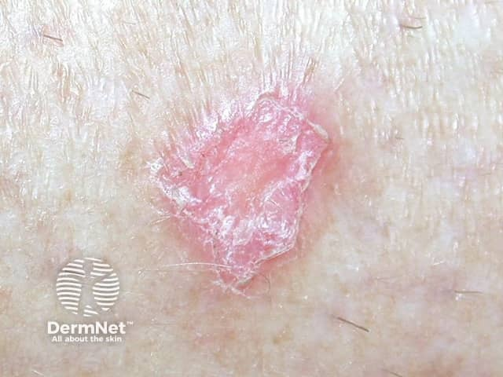
На этом кадре — единичная розово-красная бляшка с шелушащейся поверхностью. Обратите внимание: центральная часть уже несколько западает и выглядит более бледной — это начало рубцовой атрофии. По периферии сохраняется активная эритема. Именно так выглядит очаг в переходе из второй стадии в третью.
Рубцовая атрофия — то есть замещение нормальной кожи грубой рубцовой тканью со стойкой потерей её структуры — формируется в центре очага по мере стихания воспаления. Она необратима: кожа в этом месте уже не восстановится. Именно с этим связан предраковый потенциал длительно существующих очагов: хроническое воспаление с рубцеванием создаёт почву для злокачественной трансформации, сходную с механизмом малигнизации любого застарелого рубца.
Три стадии развития очага
Очаг дискоидной красной волчанки проходит три стадии. В первой, эритематозной, на коже появляется небольшое розовое отёчное пятно — ничего специфического, и на этом этапе болезнь легче всего спутать с другим дерматозом. Во второй, гиперкератозно-инфильтративной, пятно уплотняется, на его поверхности появляются серовато-белые чешуйки с симптомом Бенье–Мещерского и фолликулярный кератоз; очаг принимает форму дискоидной бляшки — отсюда и название болезни. В третьей, атрофической, в центре бляшки формируется рубцовая атрофия, тогда как по периферии может сохраняться активное воспаление.
Типичная локализация
Излюбленное место — лицо: нос и щёки с классическим расположением очагов по типу «крыльев бабочки», лоб, подбородок, губы, ушные раковины. Красная кайма губ поражается нередко — это видно на следующем снимке.
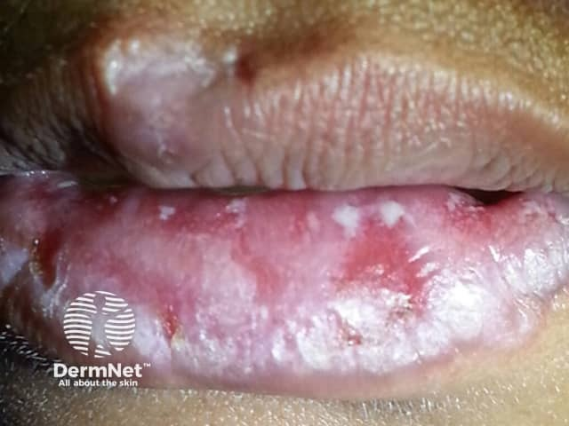
На этом кадре — поражение губ: эритематозные участки, шелушение и белесоватые изменения красной каймы. Именно поражение слизистых оболочек рта проявляется синюшно-красными или белесоватыми бляшками с запавшим или эрозированным центром и нередко затрудняет дифференциальную диагностику.
Особого внимания заслуживает волосистая часть головы. Здесь воспаление разрушает волосяные фолликулы, и в итоге формируется рубцовая алопеция — то есть стойкое облысение на месте рубца, которое, в отличие от гнёздного выпадения волос, уже никогда не зарастёт.
На двух кадрах выше — волосистая часть головы при дискоидной красной волчанке. На первом снимке видна диффузная рубцовая алопеция: там, где была активная бляшка, кожа стала гладкой, блестящей, лишённой фолликулов — фолликулы погибли. На втором кадре ещё можно различить покрасневшие и шелушащиеся участки: здесь процесс ещё активен, и рубцовая алопеция только формируется. Сравните два снимка: разница между активным очагом и уже завершившейся атрофией хорошо заметна.
Клинические варианты
Кроме классической дискоидной формы, выделяют ещё несколько вариантов кожной красной волчанки.
Центробежная эритема Биетта — поверхностный вариант: из трёх кардинальных симптомов выражена лишь гиперемия, чешуйки и рубцовая атрофия отсутствуют. Очаги располагаются в средней зоне лица по типу бабочки и растут центробежно.
Диссеминированная форма проявляется множественными слабо инфильтрированными эритематозными бляшками с незначительной тенденцией к периферическому росту. Они покрыты плотно сидящими чешуйками, болезненны при поскабливании; локализуются на лице, волосистой части головы, ушных раковинах, верхней части груди и спины, тыле кистей. После разрешения остаётся лёгкая атрофия. Эта форма требует динамического наблюдения для исключения системного поражения.
Глубокая форма (lupus profundus, или люпус-панникулит Капоши–Ирганга) — один-два асимметрично расположенных плотных подвижных подкожных узла, мало выступающих над кожей. Кожа над узлом гладкая, вишнёво-красного цвета или нормальной окраски. Чаще поражаются щека, подбородок, лоб, ягодицы, бёдра. Нередко эта форма сочетается с проявлениями дискоидной или диссеминированной форм. Важная особенность: глубокая форма никогда не трансформируется в системную красную волчанку.
Патогистология
Морфологическая картина объясняет все три кардинальных симптома. В начале болезни расширяются сосуды поверхностной кровеносной сети, развивается отёк сосочков и подсосочкового слоя дермы; здесь же формируется гнёздный околососудистый инфильтрат из лимфоидных клеток с примесью плазматических, тучных клеток и гистиоцитов. Инфильтрат охватывает также волосяные фолликулы, сальные и потовые железы — и именно их гибель объясняет рубцовую алопецию. Во второй стадии в дерме развиваются фибриноидные изменения соединительной ткани с гибелью волокнистых структур и атрофией сально-волосяных фолликулов. В эпидермисе — вакуольная дистрофия базального слоя, атрофия росткового слоя и выраженный фолликулярный гиперкератоз с роговыми пробками. Роговые пробки в устьях фолликулов — это и есть то, что снаружи видно как шипики на чешуйке.
Диагностика и дифференциальный диагноз
Диагноз в развёрнутой стадии ставится клинически: триада симптомов, симптом Бенье–Мещерского, характерная локализация. При диаскопии — надавливании предметным стеклом на очаг — эритема бледнеет, но не исчезает полностью, что помогает отличить её от воспалительной гиперемии другой природы.
Труднее всего разграничить болезнь с другими дерматозами в начальной, эритематозной стадии. Себорейный дерматит тоже даёт эритему и шелушение на лице, однако чешуйки при нём жирные и мягкие, а не плотные и болезненные при снятии; симптом Бенье–Мещерского отрицательный; рубцовой атрофии нет. Солнечный дерматит возникает остро после инсоляции, проходит без атрофии и без фолликулярного кератоза. Псориаз и красные угри в начальной стадии тоже могут имитировать первые проявления волчанки — здесь решает гистологическое исследование. В круг дифференциального диагноза при развёрнутой картине входят также себорейная экзема, лепра, сифилис и туберкулёз кожи.
Течение
Болезнь течёт длительно и непрерывно, с периодическими ухудшениями в весенне-летний период — из-за выраженной фотосенсибилизации. При неблагоприятных условиях дискоидная форма может трансформироваться в системную красную волчанку.
Лечение
Защита от инсоляции и холода обязательна при всех формах кожной красной волчанки. Фотозащитные кремы наносят ежедневно, в весенне-летний период — профилактически.
Основу лекарственного лечения составляют аминохинолиновые препараты — то есть попросту противомалярийные средства, которые при волчанке действуют как иммуномодуляторы: плаквенил (гидроксихлорохин) и хлорохин-дифосфат (делагил). Их назначают длительно, циклами по 5–10 дней с перерывами 3–5 дней; курсовая доза составляет около 90 таблеток. Повысить эффект помогают витамины — в частности, витамин В12, В6, пантотенат кальция и никотиновая кислота.
Для ускорения регресса очагов и уменьшения рубцовой атрофии при дискоидной форме наружно применяют фторсодержащие кортикостероидные мази 2–3 раза в день. При небольших упорных очагах возможны интрадермальные инъекции хингамина или делагила, в резистентных случаях — криодеструкция. Системные глюкокортикостероиды при дискоидной форме нецелесообразны — это принципиальное отличие от системной красной волчанки, при которой преднизолон назначают в ударной дозе с последующим постепенным снижением.
Все пациенты подлежат диспансерному наблюдению у дерматолога и ревматолога, а также санации хронических очагов инфекции.
Системная красная волчанка: клинические синдромы, диагностика и лечение
Системная красная волчанка — болезнь с тысячью лиц. Один больной приходит с артралгиями и лихорадкой, другой — с отёками и протеинурией, третий — с психозом. Именно поэтому её так долго принимали за разные болезни, пока не выяснилось, что в основе всегда одно: аутоиммунная атака организма против собственных структур, прежде всего против ДНК.
Начало болезни острое: недомогание, озноб, подъём температуры. К этому присоединяются мигрирующие артралгии и миалгии, анорексия, дисфагия, нарушения сна, головные боли, парестезии. Уже в дебюте могут появиться геморрагические элементы и признаки миокардиодистрофии. Клиническая картина развёрнутой СКВ включает лихорадку, кожные высыпания, артралгии и артриты, поражение серозных оболочек — плеврит, реже перикардит, — лимфаденопатию, кардит, синдром Рейно, нефропатию, психоз, анемию, лейкопению и тромбоцитопению; характерно обнаружение аутоантител к ДНК.[2, с. 62]
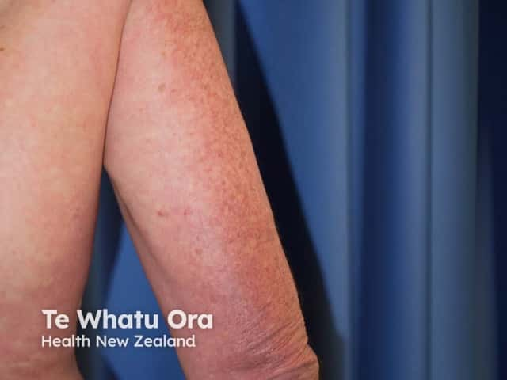
Кожный синдром
Изменения кожи при СКВ — не просто «сыпь». Они наблюдаются у 85% больных, однако в качестве первых признаков болезни проявляются лишь в 40% случаев. Остальные приходят с висцеральными жалобами, и именно поэтому СКВ нередко годами лечат не в дерматологии, а в терапии и нефрологии.
Центральное место в кожном синдроме занимает «бабочка» при СКВ — воспалительное поражение средней зоны лица с захватом щёк и спинки носа, симметричное, напоминающее по форме бабочку с расправленными крыльями. Посмотрите на снимки ниже: на обоих хорошо видна именно эта симметрия — эритема и отёчность распространяются строго от носа в стороны, не переходя через носогубные складки.
На первом снимке — яркая сливная эритема с отёком: это вариант «стойкой рожи Капоши» — ярко-розовая разлитая плотная отёчность кожи лица. На втором — шелушащиеся эритематозные пятна: вариант центробежной эритемы Биетта. Оба кадра — «бабочки», но разного типа. Учебник выделяет четыре типа волчаночной «бабочки»: 1) сосудистая («васкулитная») — нестойкое пульсирующее покраснение с цианотичным оттенком, усиливающееся от волнения, инсоляции, ветра и мороза; 2) типа центробежной эритемы Биетта — стойкие эритематозно-отёчные пятна, иногда с лёгким шелушением; 3) «стойкая рожа Капоши» — ярко-розовая разлитая плотная отёчность; 4) дискоидная «бабочка» — типичные очаги дискоидного типа в средней зоне лица.[4, с. 118]
Помимо «бабочки», кожный синдром СКВ включает диффузную алопецию, очаги дискоидного типа, диссеминированные отёчные эритематозные пятна по типу многоформной экссудативной эритемы (синдром Роуэлла), «капилляриты» пальцев, папулонекротические высыпания, распространённое ливедо, пурпуру, хейлиты, буллёзные высыпания, телеангиэктазии, ониходистрофии.[4, с. 118] У 10–15% больных кожные проявления отсутствуют вовсе — это состояние обозначают lupus sine lupo.[4, с. 118]
Отдельного внимания заслуживает подострая кожная форма: распространённые кольцевидные очаги, при слиянии дающие полициклические шелушащиеся по краям участки на груди, спине и конечностях с гипопигментацией и телеангиэктазиями в центре. Посмотрите на снимок туловища: хорошо видны именно такие кольцевидные сливающиеся очаги с полициклическим краем и более светлым центром.
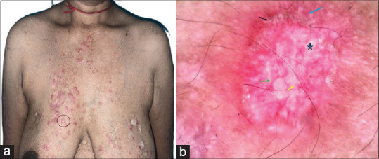
Эта форма занимает промежуточное место между кожными и системной формами: признаки системного поражения есть, но выражены умеренно — артралгии, изменения со стороны почек, полисерозиты, анемия, лейкопения, тромбоцитопения. Иммунологические изменения характерны для СКВ: ЛЕ-клетки, антинуклеарный фактор, антитела к ДНК. Прогноз, однако, относительно благоприятный.
Висцеральные поражения
СКВ поражает практически все органы. Люпус-нефрит — поражение почек при СКВ, обусловленное иммунокомплексным повреждением клубочков, — один из главных факторов, определяющих прогноз. Клинически он проявляется протеинурией, гематурией, нарастанием азотемии; без лечения ведёт к почечной недостаточности. Серозит — воспаление серозных оболочек: при СКВ это прежде всего плеврит и перикардит, реже перитонит. Больной жалуется на боль в грудной клетке, усиливающуюся при дыхании; при аускультации слышен шум трения плевры или перикарда. Поражение ЦНС — цереброваскулиты с психическими нарушениями, полиневриты, головные боли, парестезии, расстройства сна — замыкает круг системных проявлений.
Представьте себе электрический кабель с повреждённой изоляцией: ток течёт, но куда попало. Именно так работает иммунная система при СКВ — аутоантитела и иммунные комплексы оседают там, где есть базальные мембраны и коллаген: в почечных клубочках, синовии, серозных оболочках, сосудистой стенке — и запускают воспаление одновременно в нескольких органах.
Диагностика
Основа диагностики кожных форм — выявление эритемы, инфильтрации, фолликулярного гиперкератоза и атрофии кожи. В сложных случаях рекомендуется гистологическое исследование. При подозрении на системную форму решающую роль играют лабораторные данные.
Для СКВ характерны значительное увеличение СОЭ, гипохромная анемия, лейкопения, тромбоцитопения, диспротеинемия.[2, с. 63] Особый феномен — «симптом ножниц»: СОЭ высокое, а самочувствие в момент ремиссии кажется относительно удовлетворительным, и эти показатели расходятся, как лезвия ножниц. В сыворотке крови выявляют LE-клетки — нейтрофилы, поглотившие ядерный материал другой клетки; это один из классических маркёров болезни. Помимо них, определяют антинуклеарный фактор и антитела к нативной ДНК: именно высокие их титры в сочетании с панцитопенией и LE-клетками служат надёжной опорой диагноза. Дополнительно оценивают уровень комплемента (C3, C4) — при активной СКВ он снижен вследствие потребления иммунными комплексами.
Диагностические критерии ACR/EULAR объединяют клинические домены (кожный, суставной, серозный, почечный, неврологический, гематологический) с иммунологическими маркёрами. Диагноз устанавливается при накоплении необходимого числа баллов — такой подход защищает от гипердиагностики у пациентов с изолированной «бабочкой» на фоне инсоляции.
Сравнение дискоидной и системной форм по кожным проявлениям
Прежде чем перейти к лечению, удобно сравнить две формы болезни по коже — дискоидную (ДКВ) и системную (СКВ). Посмотрите на таблицу: она показывает, чем различаются очаги, их распространённость и связь с системными признаками. Для читателя, который пролистает таблицу, скажу то же самое словами.
| Признак | Дискоидная КВ (ДКВ) | Системная КВ (СКВ) |
|---|---|---|
| Типичный элемент | Чётко отграниченная бляшка с эритемой, гиперкератозом и рубцовой атрофией в центре | Отёчная эритема-«бабочка»; полиморфные пятна на туловище и конечностях; дискоидные очаги возможны, но не преобладают |
| Три кардинальных симптома | Гиперемия + фолликулярный гиперкератоз + рубцовая атрофия — все три выражены | Гиперемия выражена; гиперкератоз и атрофия слабее или отсутствуют (особенно при васкулитной «бабочке») |
| Локализация | Преимущественно лицо (щёки, нос), волосистая часть головы, ушные раковины | Средняя зона лица («бабочка»), шея, грудь; алопеция диффузная; капилляриты пальцев; ливедо |
| Рост очагов | Центробежный, медленный; центральная атрофия нарастает | Может быть быстрым; при васкулитной «бабочке» — нестойкое покраснение без атрофии |
| Кожные проявления отсутствуют | Не бывает — болезнь по определению кожная | У 10–15% больных (lupus sine lupo) |
| Системные поражения | Как правило, отсутствуют; риск перехода в СКВ существует | Полиартрит, полисерозиты, люпус-нефрит, люпус-кардит, цереброваскулиты, гемолитическая анемия |
| LE-клетки, ан-ДНК | Как правило, отрицательны или в низком титре | Высокие титры антинуклеарных антител и антител к нативной ДНК; LE-клетки положительны |
| Прогноз | Относительно благоприятный при ограниченной форме | Определяется степенью поражения почек и ЦНС |
Как видите в таблице, ДКВ — «кожная» болезнь с тремя чёткими морфологическими элементами: эритема, гиперкератоз и рубцовая атрофия. При СКВ гиперкератоз и атрофия выражены слабее или отсутствуют вовсе, зато к ним добавляется всё то, чего при ДКВ нет: капилляриты пальцев, диффузная алопеция, ливедо, буллёзные элементы. При ДКВ LE-клетки и антитела к ДНК, как правило, отрицательны; при СКВ высокие их титры — обязательная часть диагностической картины. Отдельная строка таблицы — lupus sine lupo: при СКВ у 10–15% больных кожные проявления отсутствуют, тогда как при ДКВ это невозможно по определению.
На снимке ниже — дискоидный элемент на лице: виден очерченный инфильтрированный очаг с гиперкератотическими чешуйками по краям и начинающейся атрофией в центре. Сравните его с «бабочками» выше — разница в морфологии очевидна.

На составном изображении слева — дискоидные очаги на носу и правой скуловой области: хорошо видны неровный гиперкератотический край и центральная депигментация. На снимке губ — эрозии и белесовато-серые участки: это хейлит, один из характерных для СКВ элементов, который при чисто дискоидной форме встречается значительно реже.
Лечение
При всех формах КВ обязательна защита от инсоляции и холода: фотозащитные мази, ношение шляпы с полями и тёмных очков в период солнечной активности. Это не косметическая рекомендация — ультрафиолет запускает обострения, и пренебрежение защитой сводит на нет медикаментозное лечение.
При кожных формах основу составляют аминохинолиновые препараты — плаквенил, хлорохин-дифосфат (резохин, делагил) — 5–10-дневными циклами с перерывами в 3–5 дней; курсовая доза около 90 таблеток.[2, с. 63] Топические стероиды позволяют быстрее достичь клинического эффекта и уменьшить рубцовую атрофию при дискоидной форме. Для профилактики обострений ранней весной и осенью проводят курсы аминохинолиновых производных в сочетании с препаратами кальция и никотиновой кислоты; назначают витамины группы В, А, С, РР, гипосенсибилизирующие препараты, НПВС.
При системной форме основное терапевтическое средство — системные глюкокортикостероиды (метилпреднизолон, преднизолон). Лечение начинают с ударной дозы, затем постепенно снижают до поддерживающей по мере достижения клинического эффекта.[2, с. 63] При тяжёлом люпус-нефрите и других органных поражениях к терапии присоединяют цитостатики — циклофосфамид. По показаниям проводят плазмаферез и гемосорбцию — прежде всего при высокой иммунологической активности и резистентности к стандартной терапии.
Мониторинг активности включает регулярный контроль ОАК (анемия, лейкопения, тромбоцитопения), СОЭ, титров ан-ДНК, уровня комплемента и функции почек. Нарастание титра ан-ДНК и снижение комплемента — ранние маркёры надвигающегося обострения, нередко опережающие клинические симптомы. Все больные СКВ должны находиться на диспансерном учёте — болезнь хроническая, и отмена наблюдения при кажущемся благополучии закономерно заканчивается поздно диагностированным обострением.
Склеродермия: формы, этиология, патогенез
Склеродермия — заболевание из группы диффузных болезней соединительной ткани, при котором нарушается синтез и распределение коллагена, что приводит к уплотнению и рубцеванию кожи, а при системной форме — к поражению внутренних органов. Этиология окончательно не установлена, в том числе не подтверждена инфекционная природа болезни. В патогенезе переплетаются нейроэндокринные, сосудистые и аутоиммунные механизмы, и все они замыкаются на патологии коллагена соединительной ткани.
Прежде чем разобраться в механизме болезни, посмотрите на её классификацию — она простая, и знание форм сразу объяснит, почему симптомы у разных больных выглядят столь непохоже. Склеродермию делят на ограниченную и системную. Ограниченная включает четыре варианта: бляшечную (morphea), линейную, атрофодермию Пазини–Пьерини и болезнь белых пятен (lichen sclerosus et atrophicans). Бляшечная форма проходит три стадии — пятна, бляшки и атрофии; цвета пятен самые разные: жёлтое, голубое, сливово-сиреневое, рисунок кожи постепенно сглаживается. Линейная форма, называемая также полосовидной или «сабельным ударом», тянется по конечности или лицу плотным тяжом — будто след от сабельного удара. Системная (диффузная) склеродермия начинается остро — с озноба и повышения температуры, — затем последовательно проходит стадии отёка, индурации и атрофии: кожа приобретает желтовато-серый цвет, становится деревянистой плотности, невозможно взять её в складку, лицо превращается в маску.
Теперь — к механизму. Разберём его по шагам, как цепочку событий, которую запускает первоначальный толчок.
Шаг первый: иммунное воспаление. Под влиянием нескольких факторов — генетической предрасположенности, инфекций, длительных профессиональных воздействий (вибрация, контакт с кремнезёмом, органическими растворителями) — иммунная система начинает вырабатывать аутоантитела. Два маркёра особенно важны: Scl-70 (антитела к топоизомеразе I — фермент, участвующий в репликации ДНК) характерны для диффузной формы, антицентромерные антитела — для лимитированной. Аутоантитела повреждают эндотелий сосудов и активируют Т-лимфоциты, которые инфильтрируют дерму. Именно эту лимфоцитарную инфильтрацию, а также отёчность ткани гистолог видит на самых ранних препаратах.
Шаг второй: ключевой медиатор — TGF-β (transforming growth factor beta, трансформирующий фактор роста бета). Активированные Т-клетки и макрофаги выбрасывают TGF-β в большом количестве. Этот цитокин напрямую включает фибробласты, переводя их в режим избыточной выработки коллагена. Параллельно эндотелий сосудов под действием повреждения начинает выделять эндотелин-1 — мощный вазоконстриктор. Сосуды спазмируются, интима пролиферирует, просвет сужается. Так возникает сосудистый компонент болезни — феномен Рейно (приступообразный спазм артериол пальцев в ответ на холод или стресс, дающий последовательную смену окраски кожи: белое — синее — красное).
Шаг третий: фиброз. Фибробласты, получившие сигнал от TGF-β, производят избыток коллагена I и III типов. Коллагеновые волокна вначале набухают и гомогенизируются, затем разволокняются, а стенки сосудов отекают. Эластические волокна разрушаются. В финале — склероз и атрофия: и коллагеновые, и эластические волокна замещаются грубой рубцовой тканью. Именно эту картину видит патоморфолог: последовательно — отёчность, гомогенизация и разволокнение волокон, лимфоцитарная инфильтрация, отёк стенок сосудов, разрушение эластических и коллагеновых волокон, и наконец склероз с атрофией.
Теперь — короткий разбор того, как эта цепочка выглядит в реальной клинической ситуации.
Что видит врач. На приём пришёл пациент с плотными, не берущимися в складку участками кожи на туловище, жалующийся на побеление и онемение пальцев рук в холодную погоду. На поражённых участках кожа желтовато-серая, движения в пальцах ограничены. Врач фиксирует феномен Рейно и склеродермоподобные изменения кожи.
Что из этого выводится. Сочетание феномена Рейно с индурацией кожи требует исключить системную склеродермию. Врач направляет на иммунологическое исследование: положительный Scl-70 подтверждает диффузную форму, антицентромерные антитела — лимитированную. Биопсия кожи даст картину гомогенизации коллагена, лимфоцитарной инфильтрации и склероза — именно то, что описано выше.
Что делается дальше. При подтверждённом диагнозе назначают терапию, направленную против нескольких звеньев патогенеза. Для подавления фиброза — пеницилламин по 120 мг внутрь через день. При активном воспалении — кортикостероиды в дозе 15–20 мг в сутки. Для санации возможного инфекционного триггера — пенициллин внутримышечно 25–30 млн ЕД. При почечном синдроме, который развивается вследствие сосудистой пролиферации, подключают ингибиторы АПФ: каптоприл 12–50 мг 3 раза в день или эналаприл 10–40 мг в сутки. Для противовоспалительного и иммунокорригирующего эффекта — делагил 0,2% 2 раза в день.
Главный вывод раздела: склеродермия — болезнь трёх параллельных процессов. Иммунное воспаление с аутоантителами (Scl-70, антицентромерные) запускает TGF-β-зависимый фиброз — избыточный синтез коллагена I и III типов фибробластами. Одновременно эндотелин-1 и вазоспазм повреждают сосуды — отсюда феномен Рейно и пролиферация интимы. Все три потока сходятся в одном финале: склероз и атрофия ткани.
Ограниченная склеродермия: клиника, диагностика и лечение; линейная склеродермия
Склеродермия — это заболевание соединительной ткани, в основе которого лежит патологическое накопление коллагена в коже и внутренних органах. Ограниченные формы не затрагивают внутренние органы, но оставляют на коже стойкие следы, способные существенно изменить облик человека. Их принято делить на две главные разновидности: бляшечную склеродермию (morphoea) и линейную склеродермию.
Стадии бляшечной склеродермии
Бляшечная склеродермия проходит три последовательные стадии, и каждая из них узнаётся по цвету и плотности очага.
Первая стадия — эритема. На коже появляется синюшно-розовое слабовоспалительное пятно с нечёткими краями: кожа в этом месте ещё мягкая, рисунок её сохранён. На этой стадии бляшечную склеродермию легко принять за обычный дерматит или ушиб, и именно поэтому диагноз нередко запаздывает.
Вторая стадия — уплотнение, или склероз. Очаг приобретает восковидно-белый цвет, напоминающий слоновую кость; его поверхность становится гладкой, блестящей, рисунок кожи сглаживается. По периферии бляшки можно заметить сиреневатый, лиловый ободок — признак активности процесса: именно здесь сейчас идёт фиброзирование. Иногда в центре или на краях бляшки появляются пузыри с геморрагическим содержимым — редкий, но характерный признак. Консистенция очага деревянисто плотная, взять его в складку невозможно.
Третья стадия — атрофия. Воспаление стихает, ободок исчезает, цвет меняется на желтоватый, голубоватый или сливово-сиреневый. Кожа истончается, становится сухой, волосяные фолликулы и потовые железы в очаге атрофируются.
Излюбленная локализация бляшечной склеродермии — туловище, поясница, ягодицы, реже — конечности и лицо.
Линейная склеродермия и форма «удар саблей»
Линейная склеродермия отличается от бляшечной не только формой очагов, но и глубиной поражения. Вместо округлых бляшек здесь возникают полосовидные тяжи, вытянутые вдоль конечности или по ходу нервных стволов. Поверхностными изменениями дело не ограничивается: процесс уходит вглубь, захватывая подкожную клетчатку, фасцию, мышцы, а у детей и подростков — даже кость, что приводит к отставанию конечности в росте и стойким деформациям.
Особая разновидность линейной склеродермии — форма «удар саблей» (en coup de sabre). Посмотрите на снимки чуть ниже: на лбу ребёнка отчётливо видна вертикальная полоса уплотнённой, гиперпигментированной кожи, уходящая в волосистую часть головы. Именно этот признак — линейный очаг, пересекающий лоб и скальп, — и дал болезни её название. Кожа вдоль полосы втянута, атрофирована, волосы в зоне поражения выпадают.
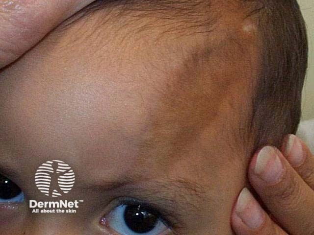
На этом снимке хорошо видна сама полоса: тёмная, чётко очерченная, она проходит по виску вертикально — как след от удара клинком. Обратите внимание на разницу в рельефе: кожа вдоль полосы западает, тогда как прилежащая здоровая кожа остаётся ровной.
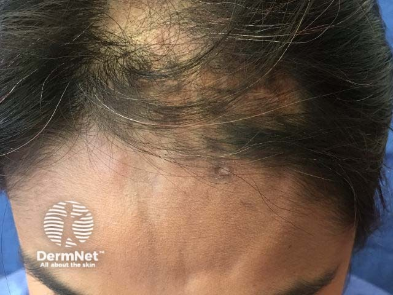
На втором снимке виден переход очага на волосистую часть головы: в зоне поражения волосы отсутствуют, граница облысения точно совпадает с краями линейного тяжа. Именно этот переход через линию роста волос — клинически значимый ориентир, отличающий форму «удар саблей» от рубцовых алопеций другой природы.
Патогистология
На ранних стадиях при гистологическом исследовании в дерме обнаруживают отёк коллагеновых волокон, а вокруг сосудов — инфильтрат из лимфоцитов с примесью плазмоцитов, гистиоцитов и эозинофилов; инфильтрат может быть и диффузным. В стадии склероза картина меняется принципиально: пучки коллагеновых волокон гомогенизируются и гиалинизируются — то есть теряют исходную волокнистость, сливаются в однородные плотные массы, нередко с отложением солей кальция. Именно этот гистологический переход — от рыхлого инфильтрата к гомогенным коллагеновым пластам — отражает суть склеродермического фиброза.
Диагностика
В большинстве случаев диагноз ставится клинически: характерные стадийные изменения цвета и плотности очага, сиреневатый ободок активности и деревянистая консистенция бляшки достаточно убедительны. Гистологическое исследование подтверждает диагноз и позволяет оценить стадию: гомогенизация коллагена в биоптате означает, что склероз уже сформировался. Капилляроскопия ногтевого ложа выявляет микрососудистые изменения и помогает отличить ограниченную форму от системной, при которой сосудистые нарушения выражены несравнимо грубее.
Лечение
Лечение направлено на подавление фиброза и улучшение микроциркуляции. Соотношение доз здесь показательно: пенициллин назначают в дозе 25–30 млн ЕД внутримышечно — это в 200–250 раз больше стандартной разовой дозы при простой инфекции. Разрыв в порядке величин объясняется тем, что при склеродермии пенициллин действует не как антибиотик, а как ингибитор коллагенсинтетазы: для подавления ферментного синтеза фиброзной ткани нужна принципиально иная концентрация препарата. Понять это важно на практике — иначе назначенная доза покажется явной ошибкой.
D-пеницилламин — хелатирующий агент, который нарушает сшивку коллагеновых волокон и тем самым тормозит нарастание фиброза. Назначают его по 120 мг внутрь через день. Кортикостероиды применяют в дозе 15–20 мг в сутки — преимущественно в активной воспалительной стадии, когда виден лиловый ободок. Делагил 0,2% дают 2 раза в день как противовоспалительное и иммуномодулирующее средство. При поражении почечных сосудов добавляют ингибиторы АПФ: каптоприл 12–50 мг 3 раза в день или эналаприл 10–40 мг в сутки.
Из ферментных препаратов используют лидазу и гиалуронидазу (64 ЕД внутримышечно): они расщепляют гиалуроновую кислоту межклеточного матрикса, разрыхляя уже сформировавшийся фиброз. Мадекассол (экстракт Centella asiatica) стимулирует нормальный, а не патологический синтез коллагена и применяется как местно, так и внутрь. Физиотерапия — электрофорез с ронидазой и ДМСО, парафиновые аппликации, массаж — улучшает проникновение препаратов и микроциркуляцию в очаге. Местные глюкокортикостероиды назначают в стадии активного воспаления, когда ободок выражен.
Главное, что следует вынести из этого раздела: ограниченная склеродермия — процесс стадийный, и выбор лечения зависит от стадии: в период активного воспаления нужны противовоспалительные средства, в период склероза — ферменты и физиотерапия, а D-пеницилламин работает на обоих этапах, подавляя сборку новых коллагеновых волокон.
Системная склеродермия: поражение кожи, внутренних органов, диагностика и лечение
Кажется, что склеродермия — это болезнь кожи: она уплотняется, грубеет, и главная задача врача — справиться с этим уплотнением. На деле кожный синдром лишь самый заметный признак системного поражения соединительной ткани, а гибель пациента наступает не от изменений кожи, а от лёгочного фиброза, почечного криза или миокардиодистрофии.
Диффузная склеродермия начинается остро: озноб, подъём температуры, мигрирующие боли в суставах и мышцах. Затем разворачивается кожный синдром, который проходит три последовательные стадии — отёк, индурация (уплотнение) и атрофия. В стадии индурации кожа приобретает желтовато-серый цвет и деревянистую плотность: её невозможно взять в складку. На лице формируется маскообразное лицо — утрата мимики вследствие равномерного уплотнения кожи; черты заостряются, складки разглаживаются, рот с трудом открывается.
На кистях развивается склеродактилия — уплотнение и натяжение кожи пальцев, из-за чего пальцы постепенно теряют подвижность и приобретают веретенообразную форму. Посмотрите на снимок ниже: рентгенограмма показывает именно то, к чему приводит многолетняя склеродактилия — отложения кальция в мягких тканях пальца, видимые как плотные белые включения.
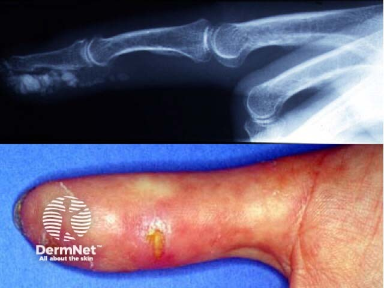
На рентгенограмме отчётливо видны кальцификаты в мягких тканях — это кальциноз, входящий в состав синдрома Тибьерже–Вейсенбаха. Кальций откладывается вокруг сосудов и суставов, а в поздней стадии процесс распространяется на кости: возникают глубокие язвы, заканчивающиеся мутиляцией фаланг — их частичным разрушением. Фотографический портрет болезни дополняют телеангиэктазии — стойко расширенные мелкие сосуды кожи, просвечивающие через атрофированный эпидермис в виде точечных красных пятнышек.
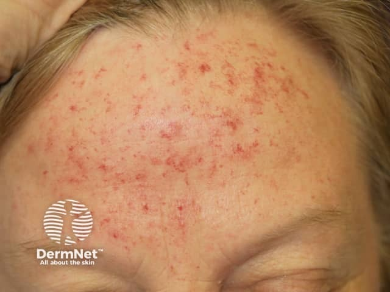
Взгляните на этот снимок кожи лба: равномерная мелкая точечная краснота — не воспаление и не сыпь, а именно телеангиэктазии. Они не бледнеют полностью при надавливании и остаются на месте, потому что стенка сосуда необратимо расширена. Рядом с этим признаком на нижней части лица нередко обнаруживается и микростомия — сужение ротового отверстия.
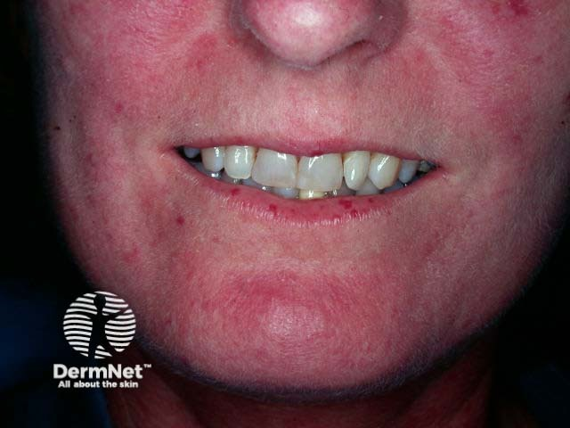
На этом снимке хорошо видно сочетание: суженный рот, которым трудно широко открыть, и телеангиэктазии на коже подбородка и щёк — два признака, которые вместе почти безошибочно указывают на системную склеродермию. Из кожного синдрома закономерно вытекает и синдром Рейно — эпизодический спазм сосудов пальцев в ответ на холод или стресс, а также эзофагосклеродермия — нарушение перистальтики пищевода с дисфагией.
Висцеральные синдромы системной склеродермии сведены в таблицу ниже — каждый из них имеет свой метод выявления, и понимание этой связи помогает строить план обследования.
| Орган / система | Клинические проявления | Основной метод выявления |
|---|---|---|
| Лёгкие | Пневмосклероз, лёгочная гипертензия, одышка | КТВР грудной клетки |
| Почки | Склеродермический почечный криз: острая гипертензия, олигурия, азотемия | АД-мониторинг, креатинин, общий анализ мочи |
| Сердце | Миокардиодистрофия, нарушения ритма, перикардит | ЭхоКГ, ЭКГ |
| ЖКТ (пищевод) | Эзофагосклеродермия, дисфагия, рефлюкс | Рентгеноскопия с барием, манометрия |
| ЖКТ (кишечник) | Нарушение моторики, синдром мальабсорбции | Рентгенологическое исследование кишечника |
| Мышцы | Полимиозит, миалгии | КФК, электромиография, биопсия |
Пройдёмся по строкам таблицы словами — для тех, кто её пролистал. Лёгкие страдают в форме пневмосклероза: соединительная ткань замещает лёгочную паренхиму, снижает диффузионную ёмкость и постепенно формирует лёгочную гипертензию. Выявить это позволяет КТВР грудной клетки — компьютерная томография высокого разрешения, на которой фиброз виден как «матовое стекло» и тракционные бронхоэктазы задолго до изменений на спирограмме. Сердечное поражение — миокардиодистрофия и перикардит — контролируется эхокардиографией; она же выявляет давление в лёгочной артерии.
Особого внимания заслуживает склеродермический почечный криз — острый подъём артериального давления в сочетании с быстро нарастающей почечной недостаточностью. Это неотложное состояние: нефросклероз при диффузной форме болезни способен развиться стремительно, и без своевременного лечения он ведёт к необратимой утрате функции почек. Поражение кишечника проявляется нарушением моторики тонкой кишки вплоть до синдрома мальабсорбции; в этих случаях показаны антибиотики — ципрофлоксацин и метронидазол.
Диагностика строится на клинических критериях ACR и серологическом анализе: антитела Scl-70 (антитопоизомераза I) характерны для диффузной формы, антицентромерные антитела — для лимитированной (CREST-синдром). Дифференцировать склеродермию приходится с кожной старческой атрофией, рубцовой атрофией после ожогов и патомимий, а также с болезнью Рейно как самостоятельным сосудистым синдромом.
Лечение системной склеродермии направлено сразу на несколько звеньев патогенеза. Против фиброза применяют лидазу (гиалуронидазу) 64 ЕД внутримышечно и пеницилламин по 120 мг внутрь через день — именно для подавления развития фиброза. Пенициллин назначают внутримышечно в дозе 25–30 млн ЕД на курс. Иммунное воспаление подавляют кортикостероидами в дозе 15–20 мг в сутки, а также иммунодепрессантами и делагилом 0,2% два раза в день. Дополнительно назначают витамины А и Е, никотиновую кислоту как вазоактивный препарат.
При склеродермическом почечном кризе препаратами выбора становятся ингибиторы АПФ: каптоприл в дозе 12–50 мг три раза в день или эналаприл 10–40 мг в сутки. Они снижают давление и замедляют прогрессирование нефросклероза. Местное лечение включает тепловые процедуры, парафин, электрофорез с раствором ронидазы в сочетании с диметилсульфоксидом (ДМСО), массаж и физиотерапию.
Главный вывод раздела: системная склеродермия убивает не кожей, а висцеральными осложнениями — лёгочным фиброзом, почечным кризом, миокардиодистрофией; поэтому маскообразное лицо и склеродактилия — сигнал немедленно искать поражение внутренних органов, а не только назначать местное лечение.
Инфекционные эритемы: узловатая эритема, кольцевидная эритема, многоформная экссудативная эритема, розовый лишай
Четыре болезни, о которых пойдёт речь, объединяет одно: их главный симптом — покраснение кожи, и все они так или иначе связаны с реакцией иммунной системы на инфекционный раздражитель. Но морфология, течение и прогноз у них совершенно разные — и именно поэтому дифференциальная диагностика здесь не формальность, а клиническая необходимость.
Узловатая эритема
Узловатая эритема — воспаление подкожной жировой клетчатки, панникулит, при котором в глубоких слоях кожи формируются болезненные узлы. Это не самостоятельная болезнь, а реакция на провоцирующий агент: чаще всего стрептококковую инфекцию (ангина, фарингит), реже — туберкулёз, саркоидоз, иерсиниоз, приём сульфаниламидов или оральных контрацептивов.
Острая форма разворачивается быстро. На голенях — симметрично, по передней поверхности — внезапно высыпают ярко-красные отёчные болезненные узлы, иногда достигающие размера детской ладони. Температура тела поднимается до 38–39°С, пациента беспокоят слабость и артралгии. Незадолго до этого почти всегда была ангина или простуда. Узлы не изъязвляются — в этом принципиальное отличие от многих других глубоких поражений кожи. За 2–3 недели они исчезают бесследно, последовательно меняя окраску: ярко-красную сменяет синюшная, затем зеленоватая и наконец жёлтая. Врачи образно называют это «цветением синяка». Рецидивов при острой форме не бывает.
Хроническая форма — совсем другая история. Это самая частая форма кожного ангиита, встречается преимущественно у женщин зрелого возраста и отличается упорным рецидивирующим течением. Узлы здесь синюшно-розовые, плотные, умеренно болезненные; они не «цветут» так ярко, как при острой форме. Провоцируют обострения хронические очаги инфекции, сосудистые и аллергические заболевания, патология органов малого таза. Обострения закономерно приходятся на весну и осень.
Лечение строится по степени активности: при лёгком течении — НПВС и санация очага инфекции; при выраженном воспалении добавляют системные кортикостероиды. Местно — компрессы, мази с противовоспалительными компонентами.
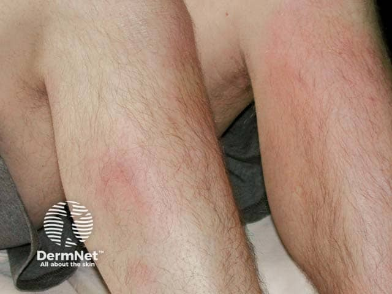
Посмотрите на снимок: голени пациента покрыты красновато-синюшными выпуклыми узлами — плотными, чётко отграниченными, расположенными по передней поверхности. Это типичная картина узловатой эритемы. Обратите внимание, что кожа над узлами не изъязвлена и не некротизирована — это принципиальный признак, отличающий узловатую эритему от индуративного туберкулёза Базена, где изъязвление вполне возможно.
Кольцевидная центробежная эритема Дарье
Кольцевидная эритема Дарье (erythema annulare centrifugum) — дерматоз, при котором воспалительные пятна разрастаются от центра к периферии, образуя кольца и гирлянды. Центр каждого элемента бледнеет, а край продолжает расти — отсюда и «центробежная» в названии. Кольца могут сливаться, перекрываться, формируя причудливые фигуры.
Заболевание тесно связано с очагами хронической инфекции: тонзиллитом, синуситом, кариесом, грибковыми поражениями. Устранение очага нередко приводит к регрессу высыпаний — и это практически диагностический тест.
На этих двух снимках хорошо видна геометрия эритемы Дарье: на коже живота — множественные кольцевидные фигуры с более бледным центром и активным розовым краем. Именно этот край и есть зона роста: он продвигается по нескольку миллиметров в сутки. Где заканчивается одно кольцо и начинается другое, определить на глаз трудно — фигуры сливаются и накладываются друг на друга. Шелушение по внутреннему краю кольца — дополнительный признак, помогающий отличить эту эритему от других кольцевидных дерматозов, в частности от кольцевидной формы красного плоского лишая.
Многоформная экссудативная эритема и синдром Стивенса–Джонсона
Многоформная экссудативная эритема (МЭЭ) — острое, нередко рецидивирующее заболевание кожи и слизистых оболочек инфекционно-аллергического генеза. Встречается у лиц молодого и среднего возраста, в том числе у детей. Слово «многоформная» в названии точное: первичный элемент — красное воспалительное пятно или папула с резкими границами — за 48 часов увеличивается до 1–2 см, а потом его центр и периферия начинают синеть, создавая картину концентрических колец.
Этот элемент называют иридиформным — от латинского iris (радужная оболочка глаза) — или мишеневидным: внешнее кольцо красное, среднее бледнее, центр вновь тёмный или цианотичный. Это ключевой морфологический признак МЭЭ, по которому её узнают с первого взгляда.
Триггеры делят на две группы. Идиопатическая форма запускается инфекционными агентами — вирусом простого герпеса (ВПГ), Mycoplasma pneumoniae, вирусами Коксаки, ECHO, гриппа и паротита, гистоплазмами, Chlamydia trachomatis, гемолитическим стрептококком и другими. Токсико-аллергическая форма возникает после приёма лекарств: пенициллина, тетрациклина, сульфаниламидов, барбитуратов, ацетилсалициловой кислоты, а также после введения вакцин. Обе формы имеют отчётливую сезонность — весна и осень.
Сыпь симметрична, располагается преимущественно на разгибательных поверхностях конечностей, ладонях и подошвах. Процесс длится 10–15 дней и заканчивается спонтанным выздоровлением, однако в 1/3 случаев возникают рецидивы.
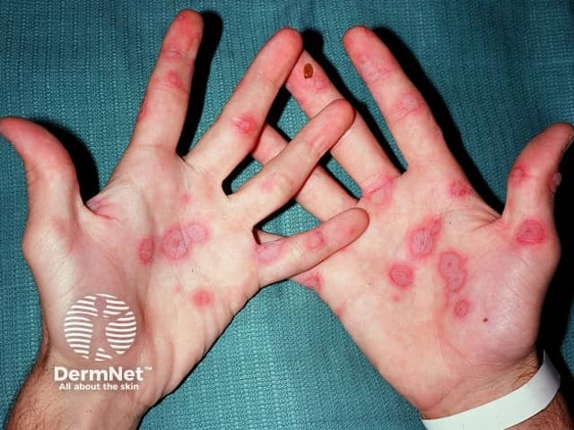
Взгляните на фотографию ладоней: на обеих кистях множественные округлые элементы с тёмным центром, светлым промежуточным кольцом и красной периферией. Это классические мишени — иридиформные элементы МЭЭ. Такая трёхзонная структура не встречается ни при узловатой эритеме, ни при розовом лишае, ни при кольцевидной эритеме Дарье — она специфична именно для МЭЭ и синдрома Стивенса–Джонсона.
Синдром Стивенса–Джонсона — тяжёлая форма МЭЭ, при которой к кожным высыпаниям присоединяется массивное поражение слизистых оболочек. Начало острое: высокая лихорадка, артралгии, миалгии. На слизистой рта появляются пузыри и эрозии, покрытые серо-белыми плёнками и геморрагическими корками. Глаза воспаляются вплоть до кератита и увеита; поражаются половые органы — уретрит, баланит, вульвовагинит. Это уже не дерматологическая задача — это неотложное мультидисциплинарное состояние.
Диагноз МЭЭ подтверждают клиника, гистологическое исследование и иммунологические тесты — реакция бласттрансформации лимфоцитов (РБТЛ) и проба Шелли. Дифференциальный диагноз проводят с фиксированной сульфаниламидной эритемой, красной волчанкой, узловатой эритемой, буллёзным пемфигоидом (при котором непрямой РИФ у 80% больных обнаруживают циркулирующие антитела IgG к антигенам базальной мембраны, отсутствующие при МЭЭ).
Лечение определяется тяжестью. При лёгких формах — симптоматическое: кортикостероидные мази, полоскания, лидокаин для обезболивания слизистых. При тяжёлых формах назначают преднизолон 30–60 мг/сут; при присоединении вторичной инфекции — антибиотики; при герпетической этиологии — ацикловир. Профилактика рецидивов весной и осенью (за 1,5–2 мес до ожидаемого рецидива) проводится левамизолом — внутрь по 150 мг 2 дня подряд с интервалом 5 дней в течение 2 мес и этакридина лактатом по 0,05 г 3 раза в день в течение 10–14 дней. Не будь у нас ацикловира, единственным способом обрыва герпес-ассоциированных рецидивов оставались бы кортикостероиды — со всеми вытекающими рисками длительного системного приёма.
Розовый лишай Жибера
Розовый лишай (pityriasis rosea Gibert) — инфекционно-аллергическое заболевание кожи с пятнистыми высыпаниями. Этиология окончательно не установлена: обсуждаются стрептококковая и вирусная природа, в пользу чего говорят положительные кожные реакции со стрептококковой вакциной и частое начало болезни на фоне ОРВИ. Болеют преимущественно люди 20–40 лет, выражена сезонность — весна и осень.
Заболевание начинается с появления материнской бляшки — крупного (около 3–5 см) ярко-розового пятна, которое возникает на туловище раньше всех остальных высыпаний. Спустя 7–10 дней по телу рассыпаются мелкие — 1–2 см — розовые округлые или овальные пятна. Через несколько дней центр каждого пятна желтеет, роговой слой сморщивается и растрескивается; после отшелушивания чешуек остаётся узкий «воротничок» рогового слоя, окаймляющий буровато-жёлтый центр, а по периферии сохраняется розовая кайма. Такой элемент сравнивают с медальоном — и это сравнение точное.
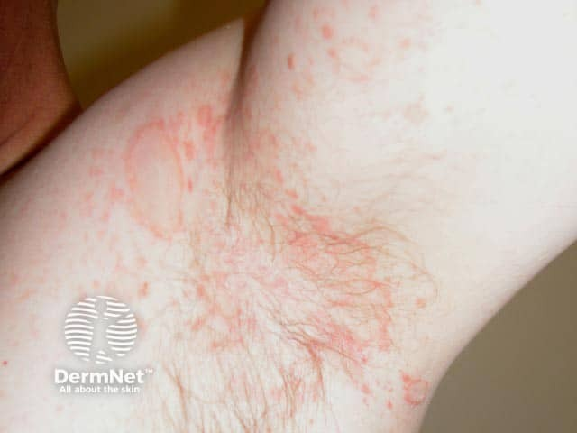
На снимке — подмышечная область и прилегающая кожа плеча. Хорошо видна материнская бляшка в подмышечной ямке: она крупнее окружающих элементов, ярче окрашена. Рядом — мелкие «дочерние» пятна с характерным центральным шелушением и светлым «воротничком» — классические медальоны. Обратите внимание на распределение: высыпания следуют линиям Лангера, что создаёт рисунок, напоминающий «рождественскую ёлку» на спине.
Дифференциальный диагноз розового лишая — один из клинических этюдов, которые нужно знать наизусть. Себорейная экзема отличается локализацией на себорейных зонах и жирными чешуйками. Псориаз даёт более толстые серебристые чешуйки и характерный феномен Кёбнера. Вторичный сифилис — пожалуй, самая важная позиция для исключения: сифилитическая розеола не шелушится, не имеет «воротничка» и медальонного вида, а серологические реакции при сифилисе положительные. Именно поэтому при розовом лишае всегда проводят серодиагностику сифилиса.
Лечение при неосложнённом течении активного вмешательства не требует — болезнь проходит самостоятельно. Пациенту рекомендуют гипоаллергенную диету, ограничение водных процедур (никакой бани, мочалки и жёсткого полотенца), отказ от шерстяного и синтетического белья. При обострении и генерализации назначают антибиотики широкого спектра действия в среднетерапевтических дозах в сочетании с десенсибилизирующими средствами; местно — масляные и водные взбалтываемые взвеси, кортикостероидные кремы.
Дифференциальная диагностика инфекционных эритем
Разобрав каждую форму, можно поглазеть на сравнительную таблицу и убедиться, что различия между эритемами вполне систематизируются по нескольким ключевым признакам.
| Заболевание | Первичный элемент | Типичные триггеры | Излюбленная локализация | Течение |
|---|---|---|---|---|
| Узловатая эритема (острая) | Болезненный узел, «цветёт» как синяк | Стрептококк, туберкулёз, саркоидоз, ЛС | Голени, передняя поверхность | 2–3 нед, бесследно, без рецидивов |
| Узловатая эритема (хроническая) | Синюшно-розовые плотные узлы | Хронические очаги инфекции, сосудистая патология | Голени | Упорные рецидивы весной и осенью |
| Кольцевидная эритема Дарье | Кольцо с периферическим ростом, бледный центр | Очаги хронической инфекции (тонзиллит, кариес, микоз) | Туловище, конечности | Хроническое, регресс после санации очага |
| Многоформная экссудативная эритема | Иридиформный (мишеневидный) элемент, три концентрических зоны | ВПГ, микоплазма, стрептококк; пенициллин, сульфаниламиды | Разгибательные поверхности, ладони, подошвы | 10–15 дней, рецидивы в 1/3 случаев |
| Розовый лишай Жибера | Медальон: буровато-жёлтый центр + розовая кайма + «воротничок» | ОРВИ, стрептококк (?) | Туловище по линиям Лангера | Самоограничивающееся, недели |
Как видите в таблице, морфология первичного элемента — главный диагностический ориентир, и именно по ней строится дифференциальный диагноз. Разберём различия подробнее, потому что в таблице они сжаты до нескольких слов, а на практике каждое из них требует понимания.
Узловатая эритема — единственная из четырёх, где первичный элемент уходит вглубь: это узел в подкожной клетчатке, а не пятно на поверхности. Его болезненность при пальпации и характерное «цветение» позволяют поставить диагноз клинически. Кольцевидная эритема Дарье отличается динамикой — кольцо растёт, центр светлеет, и этот центробежный рост можно отследить при повторном осмотре. При дифференциальной диагностике кольцевидной эритемы с хронической мигрирующей эритемой Афцелиуса–Липшютца при боррелиозе решающее значение имеет РИФ: обнаружение антител к возбудителю в крови и ликворе даёт положительный результат в 60% случаев в I стадии заболевания и в 100% — во II и III стадиях. Многоформная экссудативная эритема опознаётся по трёхзонной структуре элемента: тёмный центр, светлое кольцо, красная периферия — классическая мишень. Розовый лишай узнают по двум признакам вместе: медальонному виду пятна с жёлтым центром и «воротничком» — и по наличию материнской бляшки, которая появилась за 7–10 дней до генерализации.
Триггеры тоже помогают в диагнозе, но косвенно. Узловатая эритема после ангины у молодого пациента с высокой температурой — почти очевидный диагноз. МЭЭ после курса пенициллина или на фоне лабиального герпеса — тоже характерная ситуация. Розовый лишай на фоне ОРВИ у человека 20–40 лет весной или осенью — сочетание, на которое следует обратить внимание. Кольцевидная эритема, упорно рецидивирующая несмотря на лечение, требует поиска хронического очага инфекции или онкологической патологии.
Итог: морфология первичного элемента, глубина поражения, динамика роста и связь с триггером — четыре параметра, которые вместе позволяют разграничить инфекционные эритемы без дополнительных исследований в большинстве типичных случаев.
Туберкулёз кожи: классификация, этиология и патогенез
Здоровая кожа — неблагоприятная среда для микобактерий. Тем не менее при определённых условиях она становится мишенью, и тогда развивается целая группа болезней с разными лицами, разным течением и разным прогнозом. Объединяет их один возбудитель.
Микобактерия туберкулёза (Mycobacterium tuberculosis) — то есть попросту кислотоустойчивая палочка длиной около 2,5 мкм, не образующая спор и заметно меняющая форму в зависимости от условий среды, — вызывает туберкулёз кожи человеческого, реже бычьего типа. Посмотрите на снимок ниже: именно так выглядят микобактерии под флуоресцентным микроскопом после окраски аурамином О.
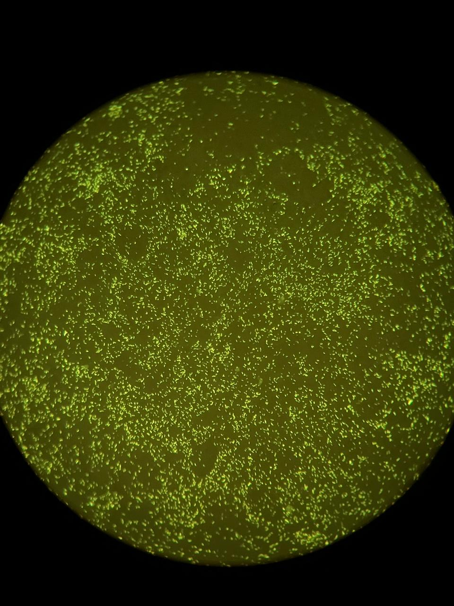
На этом микроскопическом препарате микобактерии светятся жёлто-зелёными точками и короткими палочками на тёмном фоне — это и есть те самые ~2,5 мкм, о которых говорит учебник. Именно высокое содержание миколовых кислот в клеточной стенке делает их кислотоустойчивыми и одновременно трудноубиваемыми для фагоцитов. Когда макрофаг поглощает микобактерию, но не может её уничтожить, она персистирует внутри клетки — и вокруг места персистенции начинает выстраиваться гранулёма.
Гистологически в коже при туберкулёзе выявляют инфекционные гранулёмы из эпителиоидных клеток, окружённых лимфоцитами; характерно наличие гигантских клеток Лангханса, казеозного некроза и микобактерий в центре гранулёмы. Появление гранулём — прямое следствие несостоятельности мононуклеарных фагоцитов: они захватывают возбудителя, но не способны его уничтожить, и он продолжает жить внутри них. Из этого обстоятельства вытекает ключевое клиническое следствие: чем хуже иммунный ответ, тем дольше персистирует возбудитель, тем обширнее и деструктивнее поражение.
Бугорок — центральный морфологический элемент туберкулёза кожи, лепры и лейшманиоза. Это первичный бесполостной инфильтрат в дерме, залегающий именно в ней, а не в эпидермисе, размером 0,5–1 см; он формируется как инфекционная гранулёма и, как правило, изъязвляется, оставляя рубец.
Пути проникновения в кожу
Заражение туберкулёзом происходит чаще аэрогенно, реже через желудочно-кишечный тракт. В кожу микобактерии попадают несколькими путями.
Эндогенный путь — самый частый. Возбудитель заносится в кожу гематогенно или лимфогенно из туберкулёзного очага в другом органе. Именно поэтому большинство форм туберкулёза кожи — проявление вторичного туберкулёза: они развиваются на фоне уже существующих очагов инфекции во внутренних органах.
Экзогенный путь — через повреждённый эпидермис, непосредственно от больного или через инфицированные предметы. Так, патологоанатомы и мясники, работающие с инфицированным материалом, могут получить так называемый «трупный бугорок» — первичный кожный аффект при уже сформировавшемся инфекционном иммунитете.
Помимо этих двух основных путей, возможны распространение per continuitatum — то есть непосредственно с соседнего органа, поражённого туберкулёзом, — и аутоинокуляция с мокротой, мочой или калом. Например, при кавернозном туберкулёзе лёгких микобактерии с мокротой попадают на слизистую рта и дают язвенный туберкулёз; при туберкулёзе мочеполовых органов — на кожу гениталий.
Первичный туберкулёз кожи — первичный туберкулёзный шанкр — встречается редко, преимущественно у детей грудного возраста. В месте внедрения микобактерий формируется первичный аффект, затем через 2–3 недели развиваются лимфангит и регионарный лимфаденит, что в совокупности составляет первичный туберкулёзный комплекс. Далее возможна диссеминация либо инкапсуляция с петрификацией и стойким заживлением.
Что определяет выбор клинической формы
Иммунный статус пациента — главный фактор, решающий, какая именно форма туберкулёза кожи разовьётся. Предрасполагают к болезни гормональная дисфункция, патология нервной системы, витаминный дисбаланс, расстройства водного и минерального обмена, сосудистые нарушения — например, венозный застой, — неудовлетворительные социально-бытовые условия, а на современном этапе особую роль играет ВИЧ-инфекция.
При метастатическом попадании микобактерий в кожу — как при туберкулёзной волчанке (lupus vulgaris) и части скрофулодермы — развиваются единичные очаговые поражения с тенденцией к периферическому росту. Туберкулёзная волчанка — самая распространённая форма туберкулёза кожи. Её основной морфологический элемент — бугорок (люпома): мягкий, розовый, с чёткими границами, диаметром 2–3 мм, залегающий в дерме.[4, с. 79]
Совсем иначе ведут себя туберкулиды. Это диссеминированные формы, возникающие при высокой напряжённости иммунитета: микобактерии быстро гибнут в коже, обнаружить их в биоптате практически невозможно, зато туберкулиновые пробы резко положительные. Очаги при туберкулидах не склонны к периферическому росту и хорошо поддаются специфическому лечению.
Классификация
Все формы туберкулёза кожи делятся на очаговые (локализованные) и диссеминированные. К локализованным относятся туберкулёзная волчанка, колликвативный туберкулёз кожи (скрофулодерма), бородавчатый и милиарно-язвенный туберкулёз. К диссеминированным — папулонекротический, индуративный и лихеноидный туберкулёз. Можете поглазеть на эту классификацию в Таблице 1 — там она сведена вместе с краткой характеристикой каждой формы.
| Группа | Форма | Синоним / латынь | Ключевые черты |
|---|---|---|---|
| Локализованные (очаговые) | Туберкулёзная волчанка | Lupus vulgaris | Люпомы 2–3 мм, феномен «яблочного желе», периферический рост, рубцовая атрофия |
| Колликвативный туберкулёз | Скрофулодерма | Расплавление лимфоузлов с прорывом на кожу, свищи, рубцы | |
| Бородавчатый туберкулёз | Tuberculosis cutis verrucosa | Бородавчатые разрастания до 0,5–1 см, трещины, корки; экзогенное заражение | |
| Милиарно-язвенный туберкулёз | Tuberculosis cutis ulcerosa | Язвы у отверстий тела при кавернозном туберкулёзе, возбудитель легко выявляется | |
| Диссеминированные (туберкулиды) | Папулонекротический туберкулёз | Tuberculosis cutis papulonecrotica | Рассеянные папулы с центральным некрозом, туберкулиновые пробы резко положительные |
| Индуративный туберкулёз | Эритема Базена | Глубокие узлы на голенях, преимущественно у женщин, склонность к изъязвлению | |
| Лихеноидный туберкулёз | Лишай золотушных | Мелкие фолликулярные папулы, возбудитель не обнаруживается, пробы положительные |
Разберём то, что в таблице, словами — потому что цифры и детали важны сами по себе.
Среди локализованных форм туберкулёзная волчанка занимает особое место как самая распространённая. Её люпомы — мягкие розовые бугорки диаметром 2–3 мм — склонны сливаться и расти по периферии, образуя сплошные очаги. При экссудативном характере воспаления или травме они изъязвляются. Принципиально важный диагностический признак — феномен «яблочного желе»: при диаскопии — то есть попросту надавливании предметным стеклом на кожу, которое вытесняет кровь из сосудов и позволяет увидеть истинный цвет инфильтрата, — бугорок становится желтовато-буроватым, напоминая по цвету яблочное желе.[4, с. 79] Рядом с диаскопией применяется симптом Поспелова: пуговчатый зонд при надавливании на люпому легко проваливается, оставляя ямку.
Посмотрите на снимок ниже — типичная туберкулёзная волчанка на поздней стадии, осложнённая плоскоклеточным раком кожи. На нём виден крупный эрозивно-язвенный дефект с неровными краями: именно так выглядит исход многолетнего нелечёного очага с постоянной травматизацией и хроническим воспалением. Злокачественная трансформация — одно из самых грозных осложнений запущенной волчанки.

Колликвативный туберкулёз, или скрофулодерма, — то есть расплавление (от лат. colliquatio — разжижение) туберкулёзных лимфоузлов с прорывом на кожу. На боковой поверхности шеи — наиболее типичном месте — возникает мягкий флюктуирующий узел, вскрывающийся свищами. Взгляните на следующий снимок.
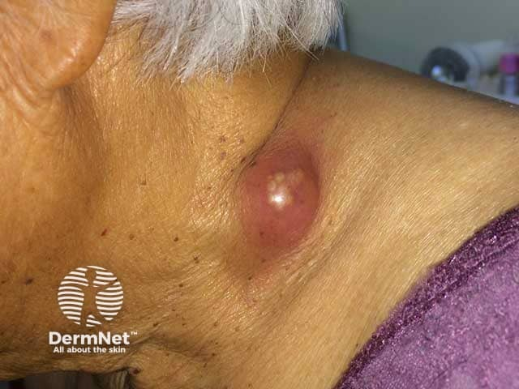
На этой клинической фотографии хорошо виден крупный округлый инфильтрат на шее с уже намечающимся размягчением в центре — именно так выглядит скрофулодерма до вскрытия. После прорыва остаются характерные фистулы и грубые рубцы.
Бородавчатый туберкулёз развивается при экзогенном заражении у иммунокомпрометированных лиц — наиболее часто при попадании мокроты на тыл кистей. В центральной части очага появляются бородавчатые разрастания высотой до 0,5–1 см с трещинами и корками.
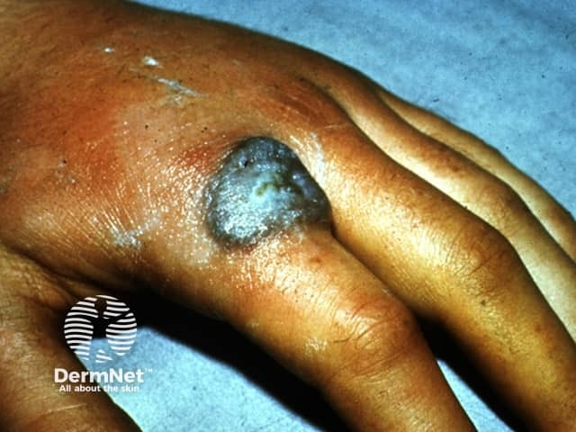
На этом снимке тыльной поверхности кисти — очаг с плотными бородавчатыми наслоениями и периферическим валиком: именно такую картину даёт бородавчатый туберкулёз. Обратите внимание на асимметрию поражения и выраженный гиперкератоз — признаки, отличающие его от обычных бородавок.
Среди диссеминированных форм особого внимания заслуживает папулонекротический туберкулёз — классический туберкулид. Он возникает у пациентов с высоким иммунитетом к микобактериям: рассеянные папулы с центральным некрозом появляются на разгибательных поверхностях конечностей, туберкулиновые пробы резко положительные, а сам возбудитель в биоптате практически не обнаруживается.

На этой фотографии — множественные рассеянные эритематозные папулы с некрозом в центре. Именно такое рассеянное симметричное поражение с тенденцией к некрозу, а не к периферическому росту, отличает папулонекротический туберкулёз от локализованных форм.
Диагностика
Диагностика туберкулёза кожи строится на нескольких столпах. Анамнез — перенесённый туберкулёз лёгких, контакт с больным — задаёт нужное направление. Туберкулиновые пробы (проба Манту) резко положительные при туберкулидах и умеренно положительные при локализованных формах.
Гистологическое исследование биоптата выявляет эпителиоидно-клеточные гранулёмы с гигантскими клетками Лангханса и казеозным некрозом. Бактериоскопия и посев культуры позволяют обнаружить возбудителя при язвенных формах, где микобактерии в мазках и при посеве выявляются сравнительно легко. ПЦР повышает чувствительность диагностики при формах с малым числом возбудителей. В особо трудных случаях прибегают к заражению морских свинок — это абсолютное подтверждение диагноза. Кроме того, обнаружение активных очагов туберкулёза во внутренних органах косвенно подтверждает кожный диагноз.
Дифференциальный диагноз проводят с бугорковым сифилидом, раком кожи, лейшманиозом, глубокими микозами и ангиитом кожи. Вот главный вывод, который следует из всего изложенного: форма туберкулёза кожи определяется не столько дозой возбудителя, сколько состоянием иммунитета пациента — и именно это определяет как клиническую картину, так и обнаруживаемость микобактерий в биоптате.
Формы туберкулёза кожи: клиника каждой формы и дифференциальная диагностика
Туберкулёз кожи — не одна болезнь, а целое семейство форм, объединённых возбудителем, но разительно непохожих по внешнему виду. Одни поражают только кожу лица и напоминают банальную сыпь, другие прячутся в глубине подкожной клетчатки и о себе не заявляют до тех пор, пока не вскроются свищом. Разобраться в этом многообразии проще, если сразу видеть главный принцип: форма болезни определяется тем, откуда попали микобактерии и насколько к ним готова иммунная система.
Ниже — характеристика каждой формы. Загляните сначала в таблицу — она даёт быстрый контур, — а затем читайте дальше: все детали, цифры и различия разобраны в тексте полностью.
| Форма | Первичный элемент | Локализация | Исход | Дифф. диагноз |
|---|---|---|---|---|
| Туберкулёзная волчанка (lupus vulgaris) | Люпома — мягкий бугорок 2–3 мм, буровато-розовый | Лицо, ушные раковины, шея | Рубцовая атрофия, малигнизация | Дискоидная красная волчанка, саркоидоз, бородавчатый сифилид |
| Бородавчатый туберкулёз (tuberculosis verrucosa cutis) | Папула, затем три зоны: бородавчатая, воспалительная, каймы | Тыл кистей (профессионалы) | Рубцевание | Бородавчатый сифилид, обычные бородавки |
| Скрофулодерма (scrofuloderma) | Глубокий узел 3–5 см; холодный абсцесс, свищи | Шея, область ключиц, грудины | «Рваные» рубцы с перемычками | Гуммозный сифилид, актиномикоз |
| Папулонекротический туберкулёз | Папула с чечевицу, корочка | Разгибательные поверхности, ягодицы | Штампованные рубчики | Папулонекротический васкулит |
| Индуративная эритема Базена | Плотный узел 1–3 см | Задняя поверхность голеней | Запавший рубец; иногда язва (тип Гетчинсона) | Узловато-язвенный ангиит, узловатая эритема |
| Лихеноидный туберкулёз (lichen scrophulosorum) | Милиарные папулы желтовато-коричневые с чешуйкой | Туловище, группами | Без следа | Вторичный сифилид, лишай Вильсона |
Туберкулёзная волчанка
Туберкулёзная волчанка (lupus vulgaris) — самая распространённая форма туберкулёза кожи, чаще встречается у женщин.[4, с. 79] Её первичный элемент — люпома, бугорок-гранулёма, залегающий в дерме: мягкий, розовый, диаметром 2–3 мм с чёткими границами.[4, с. 79] Буровато-жёлтый оттенок люпомы объясняется тем, что под тонкой кожей просвечивает казеозный центр гранулёмы.
Два симптома делают диагноз почти однозначным. Первый — феномен «яблочного желе»: при диаскопии, то есть при надавливании предметным стеклом, которое обескровливает поверхностные сосуды, люпома приобретает желтовато-коричневый цвет, именно тот, что у яблочного желе на свет.[4, с. 79] Второй — симптом Поспелова (симптом зонда): пуговчатый зонд при надавливании на люпому легко проваливается в неё, оставляя стойкое углубление.[4, с. 79] Это происходит потому, что гранулёма разрушает коллагеновые и эластические волокна дермы — опора исчезает, и зонд идёт вглубь так, словно давит на сырую глину, а не на нормальную кожу.
Бугорки сливаются в бляшку с фестончатыми краями; центр её постепенно замещается рубцом, напоминающим смятую папиросную бумагу. Это рубцовая атрофия — стандартный исход плоской формы. Если процесс экссудативный или бляшку травмируют, развивается язвенная форма: поверхностные, легко кровоточащие язвы с мягкими неровными краями.[4, с. 79] Реже встречаются опухолевидная, веррукозная и мутилирующая формы. Любимая локализация — крылья и кончик носа, щёки, верхняя губа, ушные раковины, шея.
Посмотрите на снимок ушной раковины ниже.
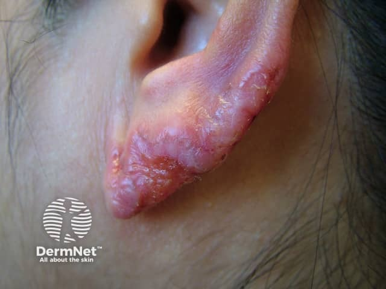
На нём видна утолщённая гиперемированная бляшка с неровным, как бы «изъеденным» краем — именно так выглядит слияние множества люпом. Обратите внимание на неравномерную поверхность: участки рубцовой атрофии чередуются с активными буграми. Это и есть классическая туберкулёзная волчанка.
Серьёзное осложнение — люпус-карцинома: многолетний рубцовый фон создаёт условия для малигнизации, и в очаге развивается плоскоклеточный рак кожи. На следующем снимке показан именно такой случай.
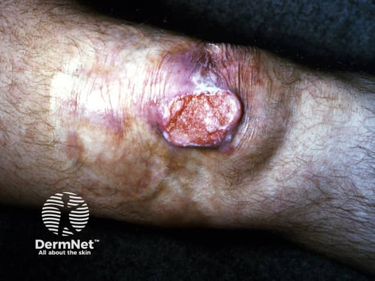
На фотографии конечности виден утолщённый очаг с неровным приподнятым краем и изъязвлённым центром — признаки перехода хронического люпуса в карциному. Рубцовая поверхность, ставшая ложем для опухоли, хорошо различима по периферии. Именно поэтому многолетнюю туберкулёзную волчанку нельзя оставлять без лечения и наблюдения.
Дифференциальный диагноз проводят прежде всего с дискоидной красной волчанкой (там выражен фолликулярный гиперкератоз и нет симптома зонда), с саркоидозом и с третичным сифилидом.
Бородавчатый туберкулёз
Эта форма — почти профессиональная болезнь. Она развивается при внедрении микобактерий в повреждённую кожу уже инфицированного человека: патологоанатомы и мясники заражаются при контакте с поражёнными тканями («бугорок патологоанатомов», он же «трупный бугорок»). У больных активным лёгочным туберкулёзом микобактерии могут попасть с мокротой на тыл кистей, и тогда картина та же, но пациент — иммунокомпрометированный.
Очаг всегда на тыле кистей и всегда имеет три чётко различимые зоны. В центре — бородавчатые разрастания высотой до 0,5–1 см с трещинами и корками, местами с рубцеванием. Вокруг — отёчная лиловая блестящая кайма, зона активного воспаления. По краю всего очага — чёткая граница с явными признаками перехода в здоровую кожу.
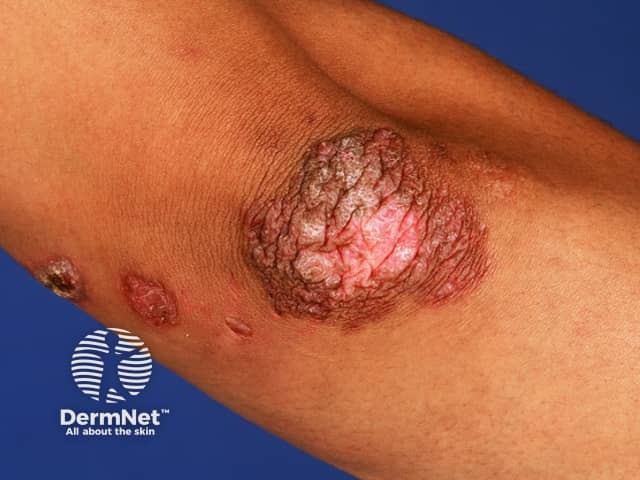
На этом снимке хорошо виден крупный очаг в области сустава: бородавчатая центральная масса с корками и трещинами окружена блестящей воспалительной каймой. Присмотритесь к границе: она резкая, что отличает бородавчатый туберкулёз от многих других поражений в этой зоне.
Главный конкурент в дифференциальном диагнозе — бородавчатый сифилид (вегетирующая папула третичного сифилиса). При сифилиде очаг, как правило, единственный, края мягкие и ровные без воспалительной каймы, а реакция Вассермана положительна. При бородавчатом туберкулёзе очагов может быть несколько, серология отрицательна, туберкулиновые пробы резко положительны.
Скрофулодерма
Скрофулодерма (scrofuloderma), или колликвативный туберкулёз, возникает двумя путями: вторично — когда микобактерии из поражённых подкожных лимфоузлов переходят в кожу, и первично — при гематогенном заносе в подкожную клетчатку напрямую. Любимая локализация — шея, область ключиц и грудины.
Колликвативный узел при скрофулодерме начинается как плотный, малоболезненный глубокий узел диаметром 3–5 см, спаянный с тканями. Кожа над ним поначалу не изменена, затем краснеет и приобретает красно-жёлтый полупрозрачный цвет — в глубине формируется казеозный некроз. Узел размягчается, образует холодный абсцесс и вскрывается свищами с кровянистым содержимым и крошковато-гнойными казеозными массами. Язва имеет мягкие подрытые края и жёлто-белый налёт. По периферии возникают новые очаги, язвы сливаются. Исход характерный и почти патогномоничный: мостиковидные рубцы — «рваные», с сосочковидными выростами и перемычками между отдельными рубцовыми тяжами.
Дифференциальный диагноз — прежде всего с гуммозным сифилидом. Гумма тоже узел в подкожной клетчатке, тоже размягчается и оставляет язву, но: она, как правило, одиночная, не спаяна с лимфоузлом, реакция Вассермана положительна, а рубец после заживления гладкий, «штампованный», а не мостиковидный. Фиброзные гуммы локализуются вблизи крупных суставов и представляют собой безболезненные хрящевидной плотности узлы величиной 1.5-2 см с неизменённой кожей. При скрофулодерме серология отрицательна, а в отделяемом могут обнаруживаться микобактерии.
Язвенный туберкулёз кожи и слизистых
Это форма при бациллярном туберкулёзе внутренних органов: микобактерии с мокротой попадают на слизистую рта, с мочой — на гениталии, с калом — в перианальную область. На снимке ниже видна именно перианальная локализация.
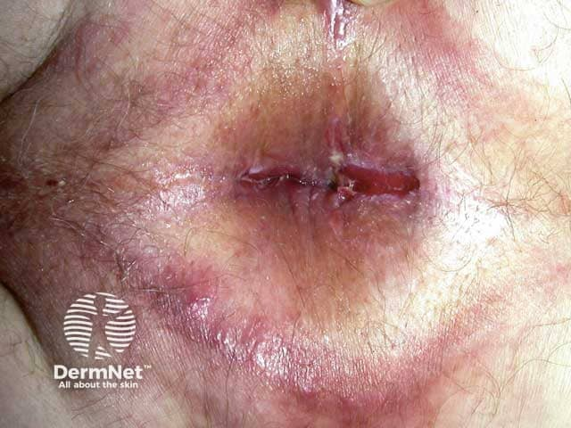
На фотографии перианальной области — выраженная эритема с кольцевидными грануломатозными элементами по краю и изъязвлением в центре. Такая картина у пациента с туберкулёзом кишечника должна сразу ориентировать на язвенный туберкулёз кожи. Важно: в отделяемом язв возбудитель обнаруживается легко — в мазках и при посеве. Это принципиально отличает язвенный туберкулёз от туберкулидов, где выявить микобактерии почти невозможно.
В язвах нередко видны зёрна Треля — мелкие желтоватые узелки на дне, представляющие собой отдельные гранулёмы. Их присутствие при болезненной язве слизистой у пациента с активным туберкулёзом внутренних органов — практически диагностический признак.
Папулонекротический туберкулёз
Папулонекротический туберкулёз — диссеминированная форма, туберкулид: микобактерии в очагах практически не обнаруживаются, туберкулиновые пробы резко положительны. Чаще болеют женщины. Течение хроническое, годами, с обострениями в холодное время года.
Папулы величиной с чечевицу покрываются тёмными корочками, которые затем отпадают. Их исход — штампованные рубчики: мелкие, круглые, чётко очерченные вдавления кожи, словно их выбили одним и тем же штампом. Именно эта одинаковость формы рубцов при разбросанных по коже элементах и отличает папулонекротический туберкулёз от хаотично рубцующихся инфекций. Локализация — разгибательные поверхности конечностей, ягодицы, лицо.
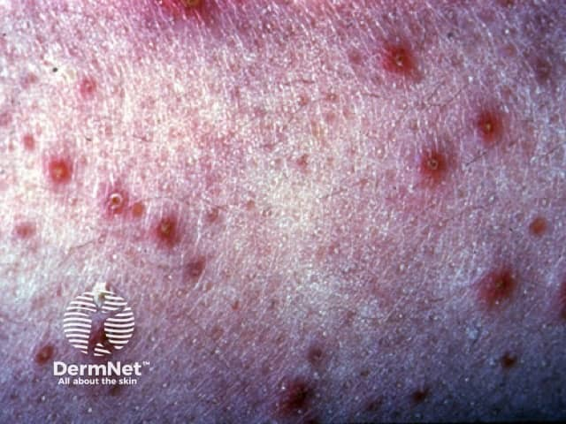
На этом снимке — множественные рассеянные эритематозные папулы в разных стадиях: одни свежие, другие покрыты корочкой, третьи уже оставили небольшое вдавление. Посмотрите на элементы в стадии разрешения: именно там видны те самые штампованные рубчики — округлые, одинаковые по форме.
Главный конкурент в дифференциальном диагнозе — папулонекротический васкулит. Клиника схожа почти до неразличимости, но при васкулите течение более короткое, туберкулиновые пробы умеренные или отрицательные, нет связи с активным туберкулёзом.
У детей и подростков с активным туберкулёзом внутренних органов встречается особая разновидность — лихеноидный туберкулёз (lichen scrophulosorum, лишай золотушных). Это мелкие, «милиарные» папулы желтовато-коричневого цвета, мягкие, с чешуйкой в центре, сгруппированные на туловище. Они разрешаются бесследно и сами по себе не опасны, но служат сигналом: где-то в организме идёт активный туберкулёзный процесс. Дифференцируют с вторичным сифилидом и красным плоским лишаём.
Индуративная эритема Базена
Индуративная эритема Базена — глубокий васкулит туберкулёзной природы: микобактерии поражают стенки глубоких сосудов подкожной клетчатки, вызывая эндо- и перифлебиты, которые прощупываются между узлами в виде плотных тяжей.[2, с. 131] Болеют преимущественно женщины.
Узлы плотные, спаянные с кожей, диаметром 1–3 см, малоболезненные. Кожа над ними поначалу не изменена, затем приобретает красновато-синюшный цвет. Большинство узлов регрессирует, оставляя запавший коричневатый рубец. Часть изъязвляется (тип Гетчинсона): образуются неглубокие, болезненные, вяло текущие язвы с жёлто-зелёным налётом. Любимое место — задняя поверхность нижней трети голеней.[2, с. 131]
Болезнь обостряется в зимний и осенний периоды — чаще, чем другие формы туберкулёза кожи. Дифференциальный диагноз проводят с узловато-язвенным ангиитом: при нём узлы крупнее, синюшно-красные, склонны к распаду, язвы вялорубцующиеся, локализация та же — задняя поверхность голеней. Решает диагноз туберкулиновая проба, поиск туберкулёзного очага и гистология.
Экзогенные формы: туберкулёзный шанкр
Туберкулёзный шанкр — первичный туберкулёз кожи, встречается почти исключительно у новорождённых, не имеющих ни иммунитета, ни инфекционной аллергии: заражение при ритуальных обрезаниях или прокалывании мочек ушей. В практике дерматолога это редкость, но знать нужно, чтобы не пропустить.
Туберкулёз кожи в целом — хроническое заболевание с обострениями и рецидивами. Факторы обострений: недостаточная длительность лечения и лекарственная устойчивость микобактерий; рецидивы особенно часты у больных туберкулёзной волчанкой и индуративной эритемой Базена именно в зимний и осенний периоды. Ключевой практический вывод: ни одну форму туберкулёза кожи нельзя лечить короткими курсами.
Лечение туберкулёза кожи
Лечение начинается в специализированном стационаре — противотуберкулёзном диспансере или дерматологическом отделении с соответствующим профилем. Это не формальность: исходный подбор препаратов и контроль переносимости требуют ежедневного наблюдения, а самостоятельный приём нескольких препаратов дома почти гарантирует нарушение режима.
Посмотрите на лечение как на двухэтапный маршрут — тогда его логика станет понятна сразу.
Первый этап длится около 3 месяцев: назначают не менее трёх препаратов одновременно. Цель — ударить по популяции микобактерий сразу с нескольких сторон, пока она ещё не успела выработать устойчивость. Второй этап — поддерживающий: два препарата ежедневно или 2–3 раза в неделю (так называемый интермиттирующий способ). Через каждые 3–4 месяца сочетание препаратов меняют — именно для того, чтобы предупредить лекарственную устойчивость. Основной курс длится в среднем 10–12 месяцев.
Средства, которыми подавляют размножение микобактерий, называют туберкулостатиками — от слова статис, «остановка». Их делят на три группы по силе действия. В первую, наиболее эффективную, входят изониазид — синтетическое соединение, блокирующее синтез миколовых кислот клеточной стенки микобактерии, — и рифампицин, антибиотик, подавляющий РНК-полимеразу возбудителя. Именно с этой пары обычно и начинают: стартовая схема — рифампицин плюс изониазид, иногда с добавлением пиразинамида. Вторая группа — препараты средней эффективности: этамбутол, стрептомицин, протионамид, пиразинамид, канамицин. Третья группа — умеренной активности: ПАСК и тибон. После завершения первого этапа рифампицин и изониазид заменяют препаратами второй группы — стрептомицином, этамбутолом, ПАСК. На язвенные дефекты дополнительно назначают присыпки с ПАСК или изониазидом местно.
У пожилых пациентов с плохой переносимостью комбинированных схем допускается длительная монотерапия производными ГИНК — например, фтивазидом.
Одна химиотерапия — ещё не всё лечение. К ней добавляют патогенетическую терапию: витамины группы В, антиоксиданты (α-токоферол, тиосульфат натрия, дибунол), иммуномодуляторы (нуклеинат натрия, тималин), анаболические стероиды. Из физиотерапии показано УФ-облучение в субэритемных дозах и электрофорез. Отдельно стоит упомянуть препараты витамина D, нередко в сочетании с солями кальция: они включены в комплексную терапию туберкулёза кожи как средство, улучшающее общий иммунный фон. Для защиты печени, которая несёт основную нагрузку при длительном приёме туберкулостатиков, добавляют гепатопротекторы; для улучшения кровотока в очагах — ангиопротекторы и препараты, улучшающие микроциркуляцию.
Теперь — короткий разбор того, как это выглядит на практике.
Что видит врач. Пациент поступает с плотными бородавчатыми разрастаниями на тыле кисти высотой до 0,5–1 см, с трещинами и корками в центральном участке очага. Проба Манту резко положительна, в биоптате — эпителиоидные гранулёмы с клетками Лангханса. Картина типична для бородавчатого туберкулёза кожи.
Что врач из этого выводит. Локализованная форма, данных за диссеминацию нет. Значит, перед ним первый этап лечения: тройная схема с рифампицином, изониазидом и пиразинамидом на 3 месяца, затем переход на два препарата с заменой комбинации. Противорецидивный курс — по 2 месяца весной и осенью в течение 3 лет, поскольку форма локализованная.
Что делает дальше. Если через 10–12 месяцев терапии очаг не разрешается и сохраняется резистентность к туберкулостатикам, к лечению подключают хирургию: полное иссечение (эксцизия) участков бородавчатого туберкулёза или плоской волчанки. После клинического излечения, подтверждённого гистологически, пациент остаётся под диспансерным наблюдением с двукратным осмотром в год в течение 5 лет — только после этого его снимают с учёта.
Рецидивы при туберкулёзе кожи возникают не случайно. Их главные причины — недостаточная длительность курса, неполноценное противорецидивное лечение, плохая переносимость препаратов и лекарственная устойчивость штаммов микобактерий, число вариантов которой достигает около 500. Вывод прост: прерванный или укороченный курс хуже, чем его полное отсутствие — он селектирует устойчивые штаммы и делает следующее лечение несравнимо труднее.
Лепра: этиология, эпидемиология, патогенез и классификация
Лепра — одно из самых древних известных человечеству заболеваний, и при этом одно из самых медленных. Медленных буквально: возбудитель делится так редко, что болезнь развивается годами, а иногда десятилетиями. Именно в этой черте скрыт ключ ко всей клинической логике лепры.
Mycobacterium leprae — кислотоустойчивая палочковидная микобактерия, известная также как микобактерия Гансена–Нейссера. Она проявляет выраженный тропизм к коже, периферическим нервам и мышечной ткани, хотя встречается и в других органах.[4, с. 81] Принципиально важно вот что: возбудитель до сих пор не удаётся культивировать на искусственных питательных средах. Интенсивно он размножается только при лабораторном заражении в тканях броненосца.[2, с. 133] Это не просто лабораторная трудность — отсутствие культуры означает, что традиционный бактериологический метод диагностики здесь неприменим. M. leprae — облигатный внутриклеточный паразит макрофагов, и вне живой клетки она существовать не может. Длительный инкубационный период — прямое следствие низкой скорости роста микроорганизмов: бактерия делится примерно раз в 12–13 дней, тогда как, скажем, кишечная палочка — каждые 20 минут. Разница — порядка тысячи раз. Именно поэтому инкубационный период при лепре составляет несколько лет, а болезнь тянется десятилетиями.[2, с. 133]
Наиболее распространена лепра в странах Азии и Африки, а также Южной Америки; в России регистрируются лишь спорадические случаи.[2, с. 133] Источник инфекции — больной человек.[4, с. 81] Основной путь передачи — воздушно-капельный, входные ворота — слизистая верхних дыхательных путей; реже возбудитель проникает трансэпителиально — через повреждённую кожу.[2, с. 133] Вместе с тем лепра остаётся слабоконтагиозным и низкопатогенным заболеванием: к ней восприимчивы не более трети людей, а субклиническое течение встречается весьма часто.[2, с. 133] Более высокая заболеваемость среди родственников больных указывает на генетическую предрасположенность. Мужчины заболевают в 2–3 раза чаще, чем женщины.[2, с. 133] Исторически больных лепрой изолировали в лепрозории — специализированные стационарные учреждения закрытого типа; сегодня, при наличии эффективной полихимиотерапии, преобладает амбулаторное лечение, а изоляция утратила прежний обязательный характер. Контактные лица подлежат обследованию и наблюдению не менее 7 лет, а превентивная химиотерапия сульфонами проводится лицам из ближайшего окружения больного. Примечательно, что мужчины, контактировавшие с больными лепрой, не подлежат призыву в армию.
Патогенез лепры определяется прежде всего состоянием клеточного иммунитета. Представьте себе два крайних варианта. В первом организм встречает небольшое количество микобактерий — иммунная система успевает среагировать, запускается полноценный клеточно-опосредованный ответ, и болезнь развивается в ограниченной форме. Во втором случае инвазия массивная, иммунная система подавляется, микобактерии беспрепятственно размножаются в макрофагах и распространяются по всему организму. Гормональный фон при этом влияет на начало болезни и её обострения. Именно эта полярность и лежит в основе классификации.
Выделяют четыре клинических типа лепры: лепроматозный, туберкулоидный, пограничный (диморфный) и недифференцированный. Иммунологический спектр между ними выглядит так. На одном полюсе — туберкулоидный тип: клеточный иммунитет максимален, возбудителей в очагах мало, поражение ограничено кожей и периферической нервной системой, внутренние органы, как правило, не затронуты. На противоположном — лепроматозный тип: клеточный иммунитет минимален или полностью подавлен, микобактерий в очагах чрезвычайно много, поражаются кожа, слизистые, глаза, лимфоузлы, периферические нервы, эндокринная система и внутренние органы. Между полюсами располагается диморфный тип: кожные и слизистые поражения напоминают лепроматозный вариант, а нарушения чувствительности — туберкулоидный. Иммунитет при диморфной и лепроматозной формах минимален, при туберкулоидной — максимален.
Недифференцированный тип занимает особое место: это неустойчивая, ранняя форма болезни. Её картина — гипо- и гиперпигментированные пятна без болевой и температурной чувствительности, множественные поражения нервов. Поражение нервов вначале отсутствует, затем постепенно развивается специфический полиневрит. Через несколько лет эта форма трансформируется либо в туберкулоидную, либо в лепроматозную — в зависимости от того, в какую сторону сместится иммунологический баланс.
Во всех четырёх типах лепры различают прогрессивную, стационарную, регрессивную и резидуальную стадии, причём трансформация одного типа в другой возможна на любом этапе течения болезни. Лепроматозный тип считается наиболее злокачественным именно потому, что сочетает системность поражения с максимальной бактериальной нагрузкой и минимальной способностью организма ей противостоять.
Лепра: клиника типов, поражение нервов и внутренних органов, диагностика и лечение
Кажется, что лепра — болезнь кожи. На деле кожа страдает последней из того, что важно: именно нервы, внутренние органы и иммунный ответ определяют тип болезни, её течение и прогноз. Кожные высыпания — лишь видимый след куда более глубокого процесса.
Возбудитель лепры — Mycobacterium leprae, микобактерия Гансена–Нейссера — облигатный внутриклеточный паразит с выраженным тропизмом к коже, периферическим нервам и мышечной ткани.[4, с. 81] То, какую форму примет болезнь, решает иммунный ответ хозяина: массивная инвазия подавляет клеточный иммунитет и ведёт к лепроматозному типу; незначительное инфицирование стимулирует иммунитет — развивается туберкулоидный вариант.[2, с. 134] Гормональный фон тоже имеет значение: первые проявления нередко возникают вскоре после полового созревания, во время беременности или после родов.[2, с. 134]
Лепроматозный тип
Лепроматозный тип — наиболее тяжёлая форма болезни. Больные при ней особенно заразны: очаги содержат огромное количество микобактерий.[4, с. 82] Поражаются кожа, слизистые носа, полости рта, носоглотки, гортани, лимфатические узлы, периферические нервные стволы, органы зрения, слуха, мочеполовые и иногда внутренние органы.[2, с. 134]
Первые признаки — округлые или неправильных очертаний эритематозные пятна с блестящей поверхностью, иногда ржавой окраски, симметрично расположенные на лице и разгибательных поверхностях кистей, предплечий, голеней.[2, с. 134] Затем пятна инфильтрируются, образуются бляшки с нормальной вначале чувствительностью. Поверхность приобретает жирный блеск — за счёт резко усиленной функции сальных желёз; при поверхностных инфильтрациях кожа становится похожа на апельсиновую корку, рисунок её сглаживается.[4, с. 82] В поздней стадии потоотделение в зонах поражения прекращается полностью.[4, с. 82]
Через 3–5 лет от начала болезни выпадают брови — сначала с наружной стороны — и пушковые волосы. Диффузная инфильтрация лица ведёт к тому, что надбровные дуги резко выступают, щёки, губы и подбородок приобретают дольчатый вид. Это «львиное лицо» (facies leonina) — один из самых узнаваемых признаков далеко зашедшего лепроматозного процесса.[4, с. 82] Развитие инфильтрата сопровождается парезом сосудов и гемосидерозом, отчего инфильтраты приобретают синюшно-бурый оттенок.[4, с. 82]
На коже — как в зонах инфильтрации, так и вне их — появляются бугорки и узлы, которые называют лепромами: это плотные дермальные или гиподермальные образования размером от нескольких миллиметров до 2 см, красновато-ржавого цвета, плотноэластической консистенции.[4, с. 82] Постепенно лепромы изъязвляются; язвы имеют крутые, нередко подрытые края, могут сливаться, образуя обширные дефекты, медленно заживающие неровным рубцом.[4, с. 82]
Слизистая носа поражается практически во всех случаях лепроматозного типа: развивается лепроматозный ринит — гиперемия, отёк, множественные мелкие эрозии. При распаде лепром нос деформируется: образуется «плосковдавленный», «хоботообразный» или так называемый нос бульдога.[4, с. 82]
Течение хроническое, с обострениями. Их провоцируют гормональные сдвиги, хирургические вмешательства, погрешности терапии. При обострении поднимается температура, увеличиваются лимфатические узлы, распадаются инфильтраты, появляются новые высыпания.
Поражение периферических нервов при лепроматозном типе развивается сравнительно поздно — двустороннее и симметричное, с постепенной инфильтрацией нервного ствола.[4, с. 82] Невриты имеют восходящий характер. Наиболее часто страдают локтевой, срединный, малоберцовый, большой ушной нервы и верхняя ветвь лицевого нерва.[4, с. 82] Чувствительность утрачивается последовательно: сначала температурная, затем болевая, наконец тактильная. На поздних стадиях — трофические и двигательные нарушения: лагофтальм, парезы жевательной и мимической мускулатуры, амиотрофии, контрактуры, трофические язвы.[4, с. 82]
Висцеральные поражения охватывают печень, селезёнку, надпочечники, яички; у мужчин развивается орхоэпидидимит. Возможен висцеральный амилоидоз — следствие нарушения белкового обмена, которому способствуют длительно незаживающие трофические язвы и хронические остеомиелиты.[4, с. 83] Костная система поражается в виде костных лепром, оссифицирующих периоститов большеберцовых и локтевых костей, рассасывания дистальных фаланг пальцев.[4, с. 83]
Органы зрения страдают по-своему. Поражение век — диффузная инфильтрация или лепромы. Реже наблюдаются эписклерит и кератит с характерным лепрозным паннусом — врастанием сосудов с конъюнктивы в роговицу. Ирит с перикорнеальной инъекцией сосудов, светобоязнью, слезотечением и болями может завершиться фиброзным экссудатом на радужке, сращением краёв зрачка и вторичной глаукомой.[4, с. 83]
Туберкулоидный тип
Туберкулоидный тип протекает значительно легче. Поражаются кожа и периферическая нервная система; внутренние органы вовлекаются редко. Микобактерии в соскобе слизистой носа при этом типе обычно отсутствуют — в отличие от лепроматозного варианта, где они определяются в огромных количествах.[4, с. 82]
Высыпания — мелкие красновато-синюшные плоские полигональные папулы, сливающиеся в бляшки с резко очерченным валикообразно приподнятым краем и склонностью к периферическому росту.[4, с. 82] Центральная часть бляшки постепенно атрофируется и гипопигментируется, по краю сохраняется эритематозная кайма шириной от нескольких миллиметров до 2–3 см — формируется так называемый фигурный туберкулоид.[4, с. 82] Отдельные очаги напоминают люпому, могут быть депигментированными или эритематозными участками с шелушением.
Чувствительность в очагах и около них снижается закономерно: вначале лёгкая гиперестезия, затем последовательно исчезают термическая, болевая и тактильная чувствительность. Потоотделение снижается и прекращается; волосы в очаге тускнеют и могут выпасть.[2, с. 136] Локализация асимметричная, на любом участке кожи.[2, с. 136]
Поражение нервов при туберкулоидном типе возникает рано — нередко до появления кожных высыпаний. Нервные стволы диффузно или чётко утолщены. Страдают преимущественно локтевой, лучевой и малоберцовый нервы. Постепенно развивается специфический полиневрит с расстройствами чувствительности в дистальных отделах конечностей, амиотрофиями мелких мышц, контрактурами пальцев, трофическими язвами и мутиляциями кистей и стоп.
Пограничный тип
При пограничной, или диморфной, лепре иммунная реактивность широко варьируется и меняется под влиянием стрессов, инфекций, истощения. Клиника нестабильна: кожные проявления типичны для лепроматозного варианта, а нарушения чувствительности напоминают туберкулоидный тип.[4, с. 83] Возможна трансформация одного типа в другой — например, туберкулоидного в лепроматозный с образованием пограничных форм.[4, с. 83]
Сравнение типов лепры
Посмотрите на таблицу ниже — она собирает главные различия между типами в одном месте.
| Признак | Лепроматозный тип | Туберкулоидный тип | Пограничный (диморфный) тип |
|---|---|---|---|
| Иммунный ответ | Минимальный, клеточный иммунитет подавлен | Максимальный, клеточный иммунитет активен | Вариабельный, нестабильный |
| Морфология высыпаний | Эритематозно-пигментные пятна → инфильтрация → лепромы; facies leonina; деформация носа | Гипопигментированные папулы, сливающиеся в бляшки с валикообразным краем и периферическим ростом; фигурный туберкулоид | Сочетание признаков обоих типов |
| Бактериоскопия (соскоб со слизистой носа) | Микобактерии в огромном количестве | Возбудитель отсутствует в носовом соскобе, выявляется лишь гистологически | Вариабельно |
| Лепроминовая проба | Отрицательная | Положительная | Положительная или отрицательная |
| Поражение нервов | Позднее, симметричное, двустороннее; восходящие невриты; локтевой, срединный, малоберцовый, лицевой нервы | Раннее, нередко до кожных проявлений; асимметричное; локтевой, лучевой, малоберцовый нервы | Нарушения чувствительности как при туберкулоидном типе |
| Чувствительность в очаге | Длительно сохраняется, затем исчезает | Снижается рано; исчезают последовательно термическая → болевая → тактильная | Снижена |
| Поражение внутренних органов | Часто: печень, селезёнка, надпочечники, яички; амилоидоз, поражение костей и глаз | Редко | Умеренно |
Разберём таблицу словами, потому что различия принципиальны для практики. Лепроматозный и туберкулоидный типы — почти зеркальные противоположности. При лепроматозном типе иммунитет подавлен, микобактерий в тканях огромное количество, нервы поражаются поздно и симметрично с обеих сторон; кожные очаги диффузны, без чётких границ, с течением времени формируется facies leonina и происходит деформация носа. При туберкулоидном, напротив, иммунитет силён, возбудитель в носовом соскобе не обнаруживается, а нервы страдают рано — нередко до появления первых кожных элементов, и очаги строго ограничены с валикообразным краем. Пограничный тип занимает промежуточное положение, и именно нестабильность его иммунной реактивности делает клинику непредсказуемой: форма может сдвинуться в любую сторону.
Диагностика
В развёрнутой стадии болезни диагноз, как правило, не вызывает затруднений — слишком характерна клиническая картина. Сложнее ранние случаи, когда высыпания минимальны. Здесь важна настороженность: снижение или исчезновение чувствительности на отдельных участках кожи, парестезии, нерезко выраженные контрактуры IV–V пальцев рук, начинающаяся атрофия мышц, пастозность кистей и стоп, стойкие поражения слизистой носа — всё это требует целенаправленного обследования.[2, с. 136]
Подтверждающие методы — бактериоскопический и гистологический. При лепроматозном типе для бактериоскопии берут соскоб со слизистой носа и скарификаты из пораженных участков кожи; препараты окрашивают по Цилю–Нильсену. При туберкулоидном типе возбудитель в носовом соскобе чаще отсутствует, и решающую роль играет гистологическое исследование биоптата.
Для раннего выявления поражений периферических нервов — вазомоторных, секреторных, трофических расстройств — проводят функциональные пробы. Гистаминовая проба: в норме укол гистамина даёт трёхкомпонентную реакцию (первичная эритема, волдырь, вторичная эритема); в зоне лепрозного поражения потоотделение выражено слабо или отсутствует. Проба с никотиновой кислотой: внутривенное введение вызывает нормально реагирующее «воспламенение» кожи — в очаге реакция ослаблена. Проба с горчичником: в норме вызывает гиперемию и пузырь — в очаге реакция отсутствует.
Лепроминовая проба — внутрикожное введение 0,1 мл суспензии микобактерий лепры, полученной гомогенизацией лепромы («интегральный лепромин»). Специфическая реакция развивается через 2–3 недели в виде бугорка или узла с некрозом.[4, с. 83] Проба не является диагностической в строгом смысле: она оценивает иммунный ответ и используется для дифференциации типов. При туберкулоидном типе — и у здоровых лиц — она положительна; при лепроматозном — отрицательна; при диморфной или недифференцированной лепре результат может быть любым.[2, с. 136]
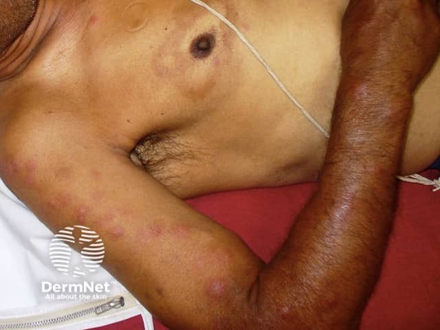
На снимке выше — картина erythema nodosum leprosum (узловатой лепрозной эритемы): плотные болезненные узловатые элементы на коже туловища и рук. Это реактивное состояние, одно из характерных обострений при лепроматозном типе. Обратите внимание на множественность очагов и их расположение на разгибательных поверхностях — именно там, где лепроматозный процесс обычно и дебютирует. Узловатая лепрозная эритема — признак активации воспаления, и её появление нередко служит первым поводом заподозрить лепру у пациента без установленного диагноза.
Дифференциальный диагноз проводят с сифилисом, витилиго, токсидермией и туберкулёзной волчанкой.
Лечение
Лечение лепры комплексное и длительное. Место его проведения зависит от типа: при незначительных кожных проявлениях абациллярной лепры допустимо лечение по месту жительства; при бациллярных формах — в лепрозории.[2, с. 136]
Одновременно назначают 2–3 противолепрозных препарата в сочетании с общеукрепляющими средствами: витаминами А, С, группы В, пирогенными препаратами, метилурацилом, γ-глобулином, при необходимости — гемотрансфузиями.
Основу специфической терапии составляют три группы препаратов. Дапсон (диаминодифенилсульфон, ДДС, авлосульфон) — главное терапевтическое средство при лепре из группы сульфонов; назначается в дозе 50–200 мг/сут. Рифампицин применяется при лепре наряду с другими антибиотиками.[4, с. 35] Клофазимин (лампрен) — третий препарат схем при мультибактериальной лепре; используются также этионамид и бенемицин.
Схема, рекомендованная ВОЗ, — многолекарственная терапия ВОЗ (multidrug therapy, MDT): при мультибактериальных формах начинают с рифампицина или клофазимина, затем переходят к сульфонам. Специфическое лечение проводится курсами по 6 месяцев с перерывами в 1 месяц; средняя продолжительность терапии составляет 3–3,5 года. Контроль эффективности — бактериоскопия и гистологическое исследование.
Итог, который следует запомнить: тип лепры определяет иммунный ответ хозяина, а не вирулентность возбудителя — и именно от типа зависит, когда поражаются нервы, насколько заразен пациент и как строить схему лечения.
Лейшманиоз кожи: этиология, эпидемиология, клинические формы, диагностика и лечение
Возбудитель кожного лейшманиоза — простейшее Leishmania tropica — существует в двух морфологических формах, и различать их важно, потому что каждая живёт в своём хозяине. Амастигота — это внутриклеточная форма: округлое тельце диаметром 2–5 мкм без наружного жгутика, живущее внутри макрофагов кожи. При окраске по Романовскому–Гимзе цитоплазма амастиготы окрашивается в голубой цвет, ядро — в тёмно-красный, а рядом с ядром отчётливо виден кинетопласт — компактная структура, представляющая собой скопление митохондриальной ДНК; по нему амастиготу и опознают в препарате. Промастигота — жгутиковая форма, обитающая в кишечнике москита: она длиннее (10–15 мкм), вытянута, и жгутик у неё направлен вперёд.
Переносчик — москит рода Phlebotomus. Посмотрите на снимок ниже: перед вами мелкое двукрылое с густо опушённым телом и характерно поднятыми крыльями — именно такая морфология позволяет отличить флеботомуса от обычного комара даже при беглом осмотре.
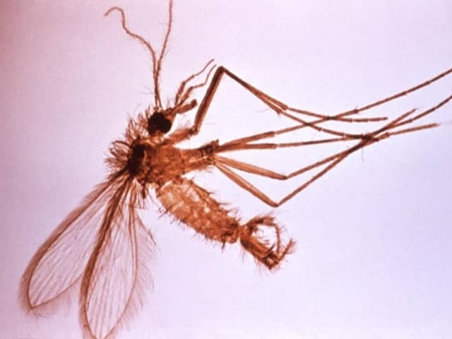
Цикл передачи устроен так. Москит при укусе больного человека или животного всасывает амастиготы вместе с кровью; в преджелудке насекомого они превращаются в промастиготы, размножаются, и через 5–10 суток подвижные промастиготы мигрируют к хоботку. При следующем укусе они вводятся в кожу нового хозяина — и цикл замыкается. Не будь этого промежуточного этапа размножения в насекомом, один укус заражал бы лишь теми единичными паразитами, что случайно попали в ранку, и эффективной передачи инфекции попросту не существовало бы.
На схеме выше показаны стадии жизненного цикла трипаносоматид — третий ряд (C) относится непосредственно к Leishmania. Обратите внимание: в левой части ряда изображены округлые амастиготы внутри клетки хозяина, в правой — вытянутые промастиготы, характерные для кишечника москита. Это наглядно показывает, насколько разительно меняется морфология паразита при смене хозяина.
По источнику инфекции выделяют два варианта кожного лейшманиоза. Антропонозный лейшманиоз (городской, поздноизъязвляющийся) вызывается L. tropica minor; источник — больной человек. Зоонозный лейшманиоз (сельский, остронекротизирующийся) вызывается L. tropica major; его резервуар — мелкие млекопитающие, прежде всего большая песчанка. Оба варианта эндемичны для Закавказья и Средней Азии, сезонность определяется активностью москитов — летне-осенний период. Дети восприимчивы особенно: у них ещё нет приобретённого иммунитета, а перенесённый лейшманиоз оставляет стойкую защиту.
В коже на месте укуса формируется гранулёма — лейшманиома. Патогенез укладывается в четыре последовательные стадии: инкубация, пролиферация (бугорок), деструкция (язва) и репарация (рубцевание). В первые 6–8 месяцев в гранулёме преобладают эпителиоидные и гистиоцитарные элементы, гигантские клетки и множество лейшманий; в поздней стадии картина меняется — появляются лимфоидные и плазматические клетки, а лейшмании становятся редкими. При зоонозном варианте в центре инфильтрата развивается некроз с лейкоцитарным валом по периферии — именно поэтому язва при нём формируется быстро и выглядит особенно разрушительно.
Клинические формы различаются прежде всего темпом развития — и здесь два варианта лейшманиоза расходятся разительно. При антропонозном варианте инкубационный период длится 2–8 месяцев; бугорок растёт медленно и изъязвляется лишь через 5–10 месяцев. Язва неглубокая, с приподнятым инфильтратом по краю и скудным серозно-гнойным отделяемым; рубцевание завершается приблизительно через год. Туберкулоидная форма — особый вариант: бугорки появляются уже в зоне постлейшманиозного рубца, преимущественно на лице, и именно это отличает её от первичной лейшманиомы.
При зоонозном варианте картина иная. Инкубационный период короток — 1–4 недели; бугорок растёт стремительно, напоминая фурункул, и быстро превращается в кратерообразную язву с обильным гнойным отделяемым. Вокруг язв нередко возникают лимфангиты и лимфаденит. Рубцевание наступает через 3–6 месяцев — значительно быстрее, чем при городской форме.
Посмотрите на два клинических снимка. На первом — лицо пациента с множественными крупными бугристыми элементами: такая картина типична для распространённого поражения при лейшманиозе с ещё не изъязвившимися очагами.
На втором снимке — крупный план одиночной язвы с чётко очерченным краевым инфильтратом в виде валика. Именно этот приподнятый плотный край, окружающий язвенный кратер, служит одним из ключевых клинических признаков лейшманиомы в стадии деструкции.
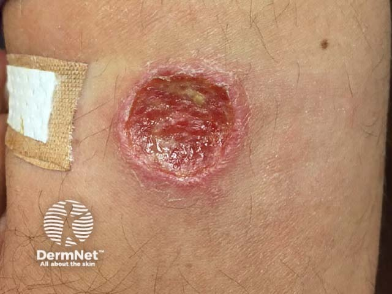
Диагностика начинается с микроскопии. Материал берут из нераспавшегося бугорка или из инфильтрата по краю язвы — не со дна, где паразитов почти нет. Соскоб окрашивают по Романовскому–Гимзе и ищут амастиготы: внутри макрофагов и внеклеточно. Если результат отрицательный, прибегают к гистологическому исследованию биоптата или к биопробе — заражению белых мышей. ПЦР и серологические методы используют как дополнение, особенно при хронических и туберкулоидных формах.
Дифференциальный диагноз проводят с бугорковым и гуммозным сифилидом, туберкулёзной волчанкой, глубокими микозами и раком кожи. Ориентиры такие: при бугорковом сифилиде новые бугорки никогда не появляются в рубце, а рубец остаётся мозаичным по цвету; при туберкулёзной волчанке феномен зондирования (проваливание зонда) положителен; при лейшманиозе — отрицателен.
Основа лечения — препараты, действующие непосредственно на амастиготы внутри макрофагов. Мономицин назначают по 250 000 ЕД внутримышечно 3 раза в сутки, курсовая доза — 7–9 млн ЕД. При системных формах и тяжёлом течении применяют препараты сурьмы (глюкантим, солюсурьмин), амфотерицин В и пентамидин. Дополнительно используют метациклин, доксициклин, антималярийные препараты. Из местных методов — 2–3% мономициновая мазь, криодеструкция и лазеротерапия.
Профилактика строится на трёх направлениях: ликвидация мест выплода москитов, истребление песчанок как природного резервуара зоонозного варианта и вакцинация живыми промастиготами за 3 месяца до выезда в эндемичный очаг — она формирует иммунитет до контакта с диким штаммом.
Источники
- 7. Лекция коллагенозы
- Конспект лекций дерматология
- 9. лекция сифилис
- Иванов — Кожные и венерические болезни